From Bits to Shor
Hi. Pull up a chair. Over the next few hours I'm going to walk you from "what even is a qubit?" all the way to the algorithm that could break internet encryption. You don't need any physics background. If you can multiply two small numbers and read a table, you can follow every step.
Bit order: on this page, a state like |01⟩ means q0 = 0 and q1 = 1, reading left to right like the textbook. Qiskit and The Quantum Land print q0 on the right, so the same state shows up as "10" there. I'll remind you when it matters.
- Chapter 1 covers the why: what quantum computers are, what they're good at, what's holding them back.
- Chapter 2 covers the rules: qubits, gates, superposition, entanglement, interference, and two party tricks (teleportation and superdense coding).
- Chapter 3 covers the algorithms: Deutsch–Jozsa, Grover and Shor, and how they use those rules.
- Chapter 4 covers the engine: the Quantum Fourier Transform, Bernstein–Vazirani, phase estimation, and how the labs are built.
Introduction to Quantum Computing
1.1 Where this all came from
Let's start with a story, because it explains why "quantum computer" is a sensible idea and not science fiction.
- 1928, David Hilbert (German mathematician) asked: is there a mechanical procedure that can decide whether any mathematical statement is true? That question forced people to define what a "procedure", meaning an algorithm, actually is.
- 1936, Alan Turing (English mathematician) answered with the Turing machine: an infinitely long tape of cells, a head that reads and writes one symbol at a time, and a table of rules saying "if you're in state A and read a 1, write 0, move right, go to state B." Every laptop and phone today is, in theory, a Turing machine.
- 1982, Richard Feynman pointed out that simulating nature (atoms, molecules) on such a machine is brutally slow, because nature is quantum. His suggestion: build the computer out of quantum things.
- 1985, David Deutsch (English physicist) wrote down the theory of a universal quantum computer: a Turing machine whose tape and head obey quantum physics.
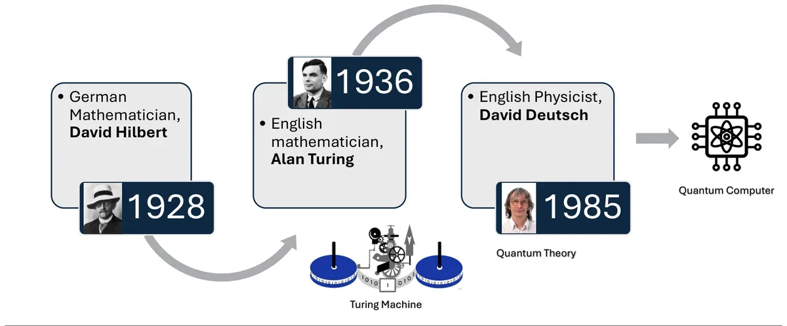
Turing defined the "rules of cooking": any recipe can be written as step-by-step instructions. Deutsch asked: what if the kitchen itself followed different physics, where an ingredient can be in two bowls at once? You get recipes that are impossible in a normal kitchen.
1.2 So what is quantum computing?
Here's a definition worth memorising:
Quantum computing is a new model of computing that uses the rules of quantum physics to process information in ways classical computers can't, enabling speedups on specific problem types.
Two things in that sentence matter. First, it's a different model, not a faster version of the same thing. Second, the speedups apply to specific problems. A quantum computer will not make Word open faster.
That's why, in practice, there are no standalone quantum computers. We have a QPU (quantum processing unit) that sits beside normal hardware, the same way a GPU does. Your CPU runs the program, hands the hard quantum-shaped part to the QPU, gets the answer back and continues.
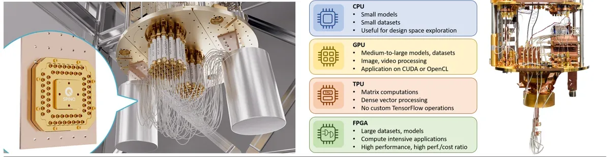
A restaurant kitchen. The head chef (CPU) does most of the work. There's a pastry specialist (GPU) for one kind of job, and now a new specialist (QPU) who is unbelievably good at a few very particular dishes and useless at frying an egg. You call the QPU only when one of those dishes is on the order.
1.3 Why do we need it?
Reason 1: chips are hitting physical limits
Moore's Law was the observation that the number of transistors on a chip doubles roughly every two years. It held for decades, but transistors are now only a few dozen atoms wide. Shrink them further and electrons start to "leak" through barriers by quantum tunnelling, a quantum effect that makes the transistor unreliable. So the free performance gains are slowing down.
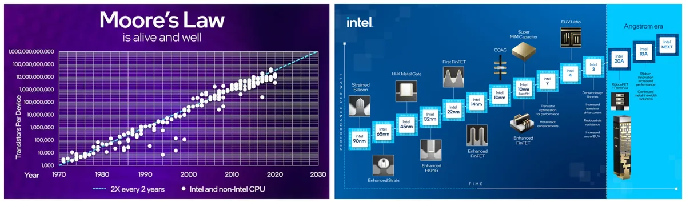
Reason 2: some problems are hopeless for any classical computer
Computer scientists sort problems by how fast the work grows as the input gets bigger. This is computational complexity theory. The main families:
| Class | Plain meaning | Example |
|---|---|---|
| P | Solvable quickly (polynomial time) by a classical computer | Sorting, shortest path, testing if a number is prime |
| NP | If someone hands you an answer, you can check it quickly | Sudoku: hard to solve, easy to check |
| NP-complete | The hardest problems inside NP. Solve one fast and you can solve all of NP fast | Map colouring, box packing, Sudoku (n×n) |
| NP-hard | At least as hard as NP-complete (may not even be checkable quickly) | Travelling salesman (find the shortest route) |
| BQP | Solvable quickly by a quantum computer with error probability below 1/3 | Factoring, discrete logarithm (Shor) |
| PSPACE / EXP | Solvable with polynomial memory / exponential time | Perfect play in generalised chess or Go |
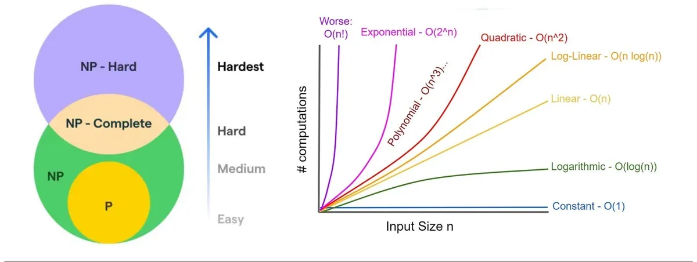
BQP is believed to contain factoring, which is outside P as far as anyone knows. It is not believed to contain the NP-complete problems. Quantum computers are not magic NP solvers. They are very good at problems with hidden structure, such as periods and symmetries.
Two examples of how fast things explode:
- Seating 10 people around a round table: \((10-1)! = 9! = 362{,}880\) arrangements.
- A travelling salesman visiting 20 cities and returning home: \(\frac{(20-1)!}{2} = 60{,}822{,}550{,}204{,}416{,}000 \approx 6.08\times 10^{16}\) possible routes.
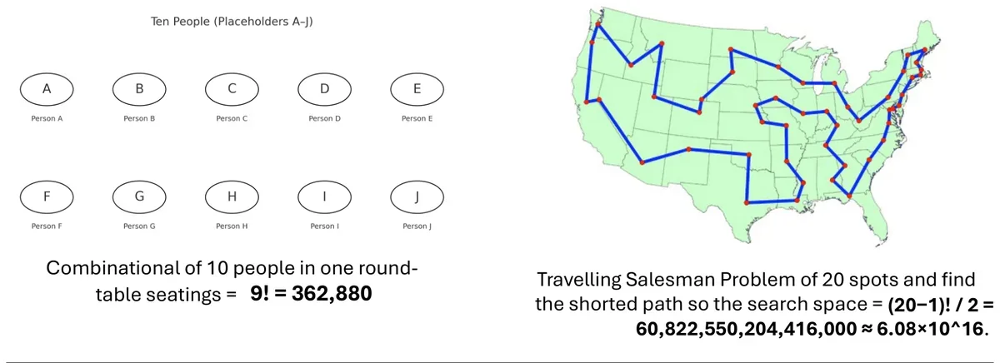
This isn't just a textbook puzzle. A delivery driver's day is a travelling salesman problem, and it costs real fuel. UPS says its route-planning system, ORION, saves about 100 million miles a year. That's a classical system that finds good routes without proving they're the best, because checking them all is impossible. Better answers here are worth real money, which is why logistics companies keep watching quantum optimisation.
Play with the growth yourself. Notice how \(2^n\) and \(n!\) go from "fine" to "longer than the age of the universe" within a few clicks.
How fast does the work grow?
| Growth | Name | Operations | Time |
|---|
Reason 3: nature itself is quantum
Here's the clearest way to see it. To describe n qubits exactly, a classical computer must store \(2^n\) numbers (called amplitudes; you'll meet them in Chapter 2). Each extra qubit doubles the memory.
Memory needed to simulate n qubits
This is exactly why chemistry is the "killer app". A caffeine molecule has so many interacting electrons that storing its exact quantum state would take more bits than there are atoms on Earth. A quantum computer stores that state natively in its qubits, because it is made of the same kind of physics.
1.4 Bits vs qubits: the side-by-side
Here's the full comparison:
| Classical | Quantum | |
|---|---|---|
| Basic unit | Bit: always 0 or 1 | Qubit: a blend (superposition) of 0 and 1 until measured |
| Reading it | You get the value; nothing changes | You get 0 or 1 with some probability, and the blend is destroyed |
| Logic | Deterministic logic gates (AND, OR, NOT), many irreversible | Unitary quantum gates: always reversible |
| Running | Sequential operations, same input gives same output | Probabilistic: same input gives a distribution of outputs |
| Working together | Bits are independent | Qubits can be entangled and act as one system |
| Copying | Copy freely | Unknown states cannot be copied (no-cloning) |
| With n units | Holds one of \(2^n\) values at a time | Described by \(2^n\) amplitudes at once |
| Best at | Everyday tasks: cheap, reliable | Simulation, optimisation, structured math problems |
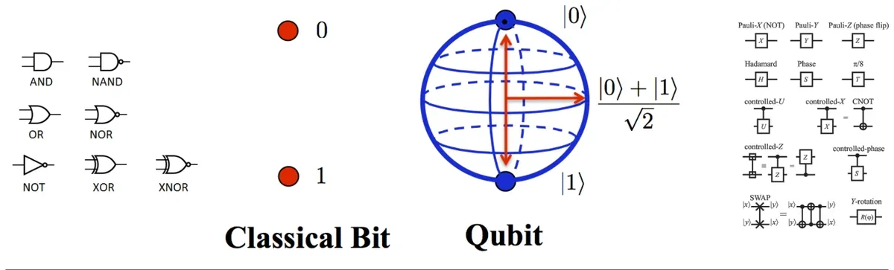
In one line: "Quantum is not a faster classical computer. It is a different tool for specific problems."
Three myths to unlearn
| Myth | Reality |
|---|---|
| "It tries every answer at once and gives you the best." | It holds many possibilities at once, but measuring gives only one random result. The skill is using interference to boost right answers and cancel wrong ones before you measure. |
| "It will replace your laptop." | It targets certain hard problems. Today's machines are small and noisy. |
| "Encryption is already broken." | A future large, error-corrected machine is the threat. That's why NIST published the first post-quantum encryption standards in August 2024. |
1.5 Classical coin vs quantum coin
A coin shows the deepest difference between the two worlds: where randomness comes from.
A classical coin
- Sample space {H, T}. A fair coin gives \(P(H)=P(T)=0.5\).
- The randomness comes from chaos: initial spin, air, the surface. If you knew all of those perfectly, you could predict the result. It's randomness from ignorance.
- It can be biased (a weighted coin, a special flipping style).
- Computers mostly use pseudo-random number generators (PRNGs): formulas that produce numbers that look random from a starting value called a seed. Same seed gives the same sequence every time. They're fast and reproducible, but predictable if you know the seed and the algorithm.
- True randomness needs physical noise: heat (thermal noise), avalanche diodes, radioactive decay.
A quantum coin
Put a qubit in the state
In words: "plus state equals one over root two times zero, plus one over root two times one." You make it by applying a Hadamard gate (H) to |0⟩.
Measure it and you get 0 or 1 with exactly 50/50 probability. But here the randomness is intrinsic. There is no hidden spin or air current that decided it; physics itself has not decided until you look. That randomness can even be certified with Bell tests, which is how device-independent quantum random number generators (QRNGs) work.
You can also make a biased quantum coin by choosing an angle θ:
With θ = 30°, \(\cos^2 30^\circ = 0.75\), so P(0) = 0.75 and P(1) = 0.25.
PRNG coin vs quantum coin
Same seed, same "random" flips. That's predictable by design.
Simulated with your browser's secure random generator. A real QRNG gets its bits by measuring actual qubits.
Schrödinger's cat
Then there's the famous thought experiment: a cat in a sealed box with a device that is triggered by a single quantum event. Quantum mechanics says that until you open the box, the system is in a superposition of "cat alive" and "cat dead". Schrödinger meant it as a joke about how strange this is. For us, the lesson is: a qubit really is in a blend of 0 and 1 until measured, and opening the box (measuring) forces one answer.
QRNGs are already commercial products. They generate cryptographic keys, run lotteries, and feed Monte Carlo simulations in finance. Some smartphones (e.g. Samsung Galaxy Quantum series) include a QRNG chip for security.
1.6 What quantum computers are good at, and what's still hard
Advantages
- Parallelism: a superposition lets one circuit work on many inputs at once (Chapter 3 explains the catch).
- Speed-ups for certain problems: exponential for factoring (Shor), quadratic for search (Grover).
- Natural simulation of molecules and materials, "in their native quantum language".
- Potential breakthroughs in AI, finance and optimisation.
Challenges
- Fragile qubits: decoherence, meaning heat, vibration or stray light leaks into the qubit and scrambles its state, often within microseconds.
- Error correction is expensive: one reliable logical qubit may need ~1,000 noisy physical qubits (Quantum Error Correction, QEC).
- Scalability: devices today have tens to a few thousand qubits.
- Algorithm maturity: only a few proven speed-ups exist.
- Cost and cold: superconducting chips run at 20–100 millikelvin, colder than outer space, inside dilution refrigerators.
Error correction: imagine whispering a message across a noisy room. To be sure it arrives, you get many people to whisper the same thing and take a majority vote. Quantum error correction does a cleverer version of this (you can't simply copy qubits), which is why one "good" qubit costs hundreds or thousands of "raw" ones.
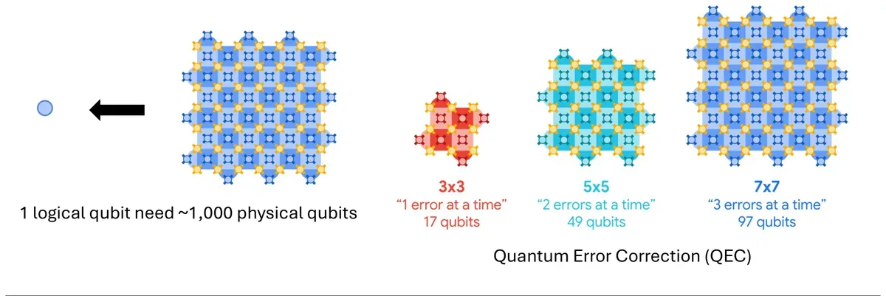
The IBM roadmap (May 2022, updated August 2024) points one way: more qubits per chip, chips linked together, and a shift from "more qubits" to "better, error-corrected qubits".
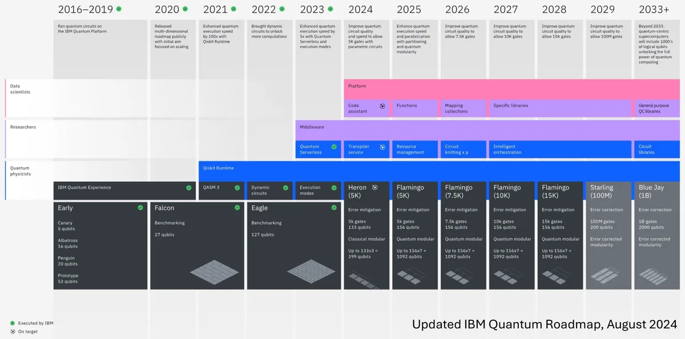
1.7 The NISQ era, supremacy and advantage
NISQ stands for Noisy Intermediate-Scale Quantum, a term coined by John Preskill in 2018. It describes where we are today:
- Devices with roughly 50 to 1,000 qubits that are not error-corrected.
- Useful for quantum simulation (chemistry, physics), hybrid quantum-classical algorithms like VQE (Variational Quantum Eigensolver) and QAOA (Quantum Approximate Optimization Algorithm), and research and proof-of-concept work.
- Not yet full-scale universal quantum computing.
A useful chart plots physical error rate against number of qubits. NISQ sits above the error-correction threshold. Below that line, adding more qubits for error correction actually reduces errors, and you get fault-tolerant quantum computing (FTQC). Google's Willow chip (2024, reported in Nature 2025) was the first to show error correction getting better as the code grew.
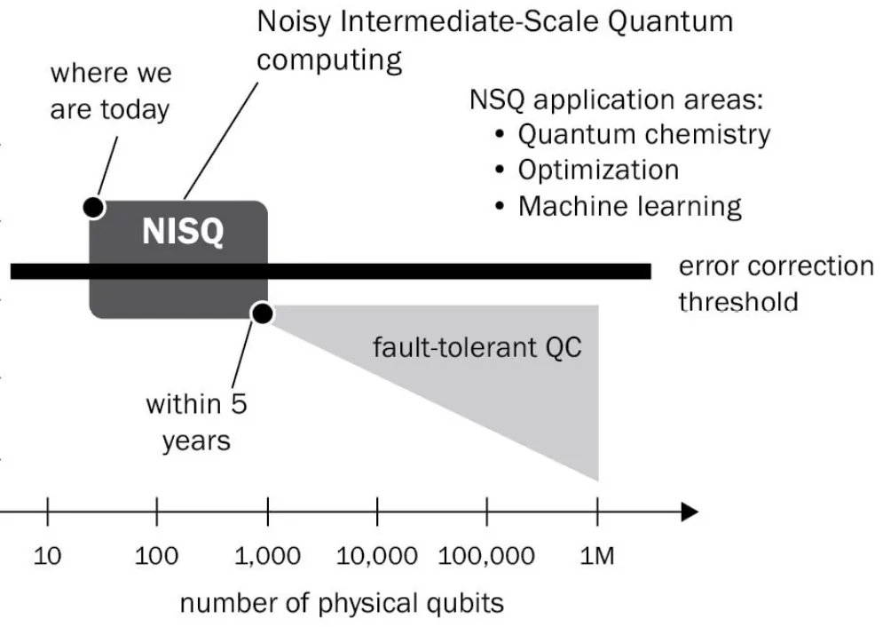
| Term | Meaning | Example |
|---|---|---|
| Quantum supremacy | A quantum device solves some task no classical computer can do in reasonable time, even if the task is useless | Google Sycamore, 2019, 53 qubits: random circuit sampling in 200 s |
| Quantum advantage | A practical benefit over the best classical method on a real problem | The current goal: chemistry, optimisation, finance |
| FTQC | Fault-tolerant quantum computing: error-corrected logical qubits, long computations | Needed for Shor on real RSA keys |
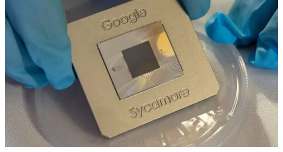
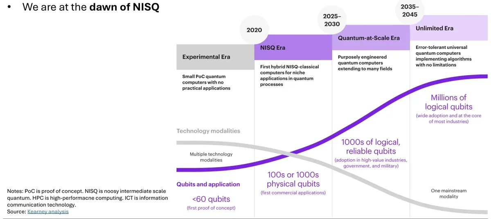
Key areas to watch: cryptography, optimisation, drug discovery, climate modelling.
1.8 How do you physically build a qubit?
A qubit is any physical system with two clearly separated states you can control. Several very different technologies compete:
| Type | What the qubit is | Who / device | Trade-off |
|---|---|---|---|
| Superconducting | Tiny electrical circuits made of zero-resistance material that act like artificial atoms (Josephson junctions) | IBM Heron r1/r2 (133 and 156 qubits, heavy-hex lattice); Google Sycamore (53, 2D grid); Rigetti | Fast gates; needs 20–100 mK cryogenics |
| Trapped ion | Individual charged atoms held by electromagnetic fields and controlled with lasers | Quantinuum H1-1 (~20, all-to-all connectivity); IonQ Aria (#AQ 25) | Very high fidelity; slower gates |
| Photonic | Particles of light (photons) travelling on optical chips | Xanadu Borealis (216 squeezed modes); PsiQuantum | Room-temperature pathways; photon loss |
| Neutral atom / Rydberg | Uncharged atoms held in a 2D grid by laser "tweezers" | Atom Computing (~1,200); QuEra Aquila (256) | Scales to many qubits; slower cycles |
| Quantum annealer | Not gate-based: the system "settles" into the lowest-energy answer of an optimisation problem | D-Wave Advantage (5,000+ qubits, Pegasus topology) | Huge qubit counts, but only for optimisation-shaped problems |
| Topological | Exotic quasiparticles (anyons) in 2D materials; information stored in how they braid | Microsoft (research stage) | Naturally protected from noise, still experimental |
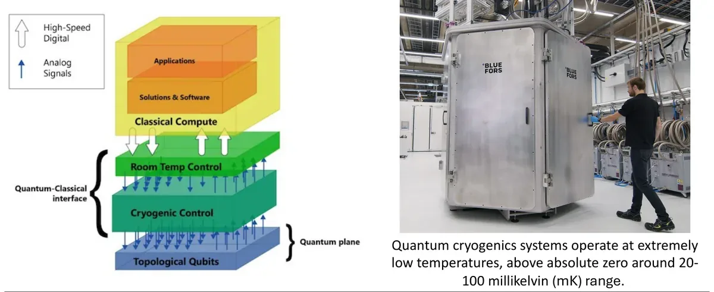
1.9 Applications: where quantum could actually help
Pick a field.
Why does chemistry keep coming up? Making fertiliser by the Haber-Bosch process takes huge heat and pressure, and it uses roughly 1–2% of the world's energy. Bacteria do the same reaction at soil temperature, using an enzyme whose core (FeMoco) is too quantum for classical computers to simulate exactly. If we could simulate it, we might learn how to copy it. That's the sort of problem Feynman meant, and a big reason this field gets funded.
Quantum applications by field
- Portfolio optimisation with QAOA / Ising models: balance risk and return across thousands of assets.
- Credit-risk scoring and stress testing using quantum kernels and boosting.
- Derivatives pricing with Quantum Monte Carlo / amplitude estimation (a quadratic speed-up over classical Monte Carlo).
- Fraud and anomaly detection with variational quantum classifiers.
- Liquidity / market-impact simulation using quantum walks.
- Quantum money: banknotes that can't be forged, thanks to no-cloning.
- Ground-state energy estimation (VQE) for catalyst design, e.g. better fertiliser production or carbon capture.
- Protein–ligand docking (how a drug fits a protein) with QAOA / QUBO encodings.
- Peptide and protein design via quantum generative models; protein folding prediction.
- Multi-omics feature selection and clustering with quantum kernels.
- MRI / CT image reconstruction with quantum-inspired solvers.
- Hospital scheduling (nurses, beds, operating rooms) via QUBO.
- Personalised treatment policy learning with quantum reinforcement learning.
- Molecule simulation and drug discovery in general.
- Quantum kernels for small-data classification.
- Variational quantum classifiers / regressors (VQC / VQR).
- Quantum generative models (QGANs, quantum VAEs).
- Feature selection and sparse coding via Ising / QUBO.
- Hyperparameter search with QAOA.
- Model families: QNN, QSVM, QLSTM, QRL (all covered in Chapter 6).
- Quantum Key Distribution (QKD): links where eavesdropping is detectable, thanks to no-cloning.
- QRNG for cryptographic keys.
- Post-quantum cryptography readiness testing using Shor / Grover simulators.
- Quantum-secure federated learning protocols.
- Intrusion pattern search on graphs via QAOA.
- Quantum channels, quantum-safe systems, quantum communication (Chapter 8).
- Vehicle routing with time windows (VRPTW) via QUBO: delivery trucks, Grab-style ride matching.
- Warehouse picking and bin packing.
- Crew and roster scheduling under constraints.
- Production planning and lot sizing; multi-echelon inventory.
- Cargo loading, fleet maintenance, demand forecasting.
- Quantum Go, Quantum Chess, Quantum Tic-Tac-Toe: pieces can be in superposition across squares.
- Game AI built from quantum reinforcement-learning primitives.
- Puzzles and educational games that use quantum rules as mechanics.
- Virtual labs with real QPU back-ends and simulators.
- Interactive circuit sandboxes for courses (like the ones on this page).
- A Quantum Teachable Machine (like Google Teachable Machine).
- QAOA for school scheduling; VQE for chemistry classes.
An honest outlook per field: chemistry and materials is "most promising", cryptography "drives new standards", optimisation is "early research", machine learning is "mostly unproven". Keep that in mind when you read headlines.
1.10 The tools you'll use
- Real quantum computers on the cloud: IBM, Google, Rigetti, Fujitsu.
- Fake devices, meaning simulators that copy a real chip's noise (e.g. IBM's
FakePerth): IBM Quantum, AWS Braket, Azure Quantum. - Simulators: The Quantum Land (drag-and-drop, used in class), Qiskit (Python, used in the labs), Cirq (Google).
The developer workflow has four steps: Code (Qiskit / Cirq), Translate the algorithm into a quantum circuit, Choose real hardware or a simulator, Execute (measure, iterate). Inside every run: Initialize qubits, Apply gates, let interference shape the outcomes, Measure to get a classical result.
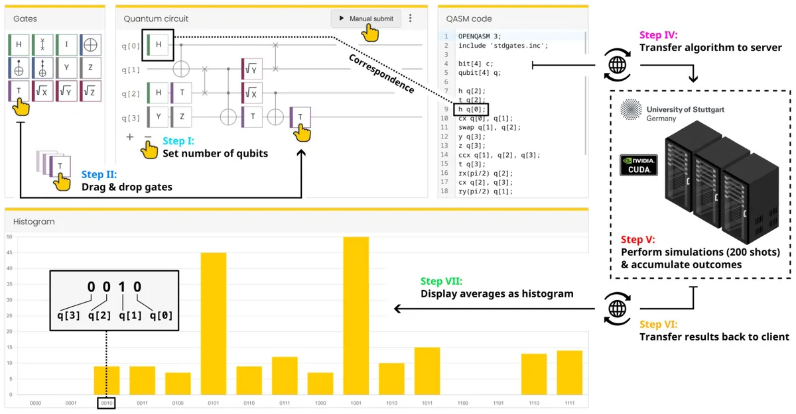
Chapter 1 in ten lines
- Quantum computing is a different model of computation, built on quantum physics.
- A QPU is a co-processor, like a GPU, not a laptop replacement.
- Classical chips are near physical limits; some problems grow as 2ⁿ or n!.
- Simulating n qubits classically needs 2ⁿ numbers.
- A qubit is a blend of 0 and 1 until measured; measurement gives one random answer.
- Quantum randomness is intrinsic, not ignorance; it powers QRNGs.
- Challenges: decoherence, ~1,000 physical qubits per logical one, scaling, extreme cold.
- NISQ = 50–1,000 noisy qubits, no full error correction; hybrid VQE/QAOA.
- Supremacy (Sycamore 2019) ≠ advantage (useful) ≠ fault tolerance.
- Hardware: superconducting, ion trap, photonic, neutral atom, annealer, topological.
Check yourself: Chapter 1
Basics of Quantum Mechanics
This is the chapter where we learn the rules of the game. Take it slowly. Everything in Chapters 3 and 4 is just these rules used cleverly.
2.1 What quantum mechanics says
Quantum mechanics is the physics of very small things: atoms, electrons, photons (particles of light). Before it existed, classical physics (Newton's laws) explained footballs and planets perfectly, but it could not explain why atoms only emit certain colours of light, or how light and matter exchange energy.
Three ideas are all you need to start:
- Quantised: energy comes in fixed packets. An electron in an atom can only sit on certain energy levels, like a ladder with no half-steps. That's why neon signs glow in specific colours.
- Wave–particle duality: light and electrons arrive at a detector as single dots (like particles), but spread out and interfere (like waves).
- Probabilistic: the theory usually can't predict exactly what will happen, only the probabilities.
| Feature | Classical physics | Quantum physics |
|---|---|---|
| Scale | Everyday objects | Atoms and subatomic particles |
| Predictability | Deterministic: exact outcomes | Probabilistic: likelihoods only |
| How objects move | Definite paths | "Probability clouds" |
| Effect of observing | None | Measurement changes the state (collapse) |
| Examples | Throwing a football, Earth's orbit, car engines | Solar panels, microwaves, X-rays, lasers |
- Transistors and semiconductors: every chip in your phone works because quantum mechanics explains how electrons move in silicon.
- Solar cells: light packets (photons) knock electrons loose to make electricity.
- GPS: satellites carry atomic clocks that tick using atomic energy transitions. Your phone's position depends on timing accurate to billionths of a second.
- MRI scanners: use the quantum spin of hydrogen nuclei in your body. Electron microscopes use the wave nature of electrons to see tiny structures.
2.2 The double-slit experiment
This is the experiment that broke classical physics, and it explains interference, the most important tool in quantum computing.
Fire particles (electrons or photons) one at a time at a wall with two narrow slits, and record where each lands on a screen behind it. Each particle arrives as a single dot. But after thousands of dots, they form stripes: bright bands where many land and dark bands where almost none land. That stripe pattern is what waves do when they pass through two slits and overlap. So each single particle somehow went "through both slits" and interfered with itself.
Now put a detector at the slits to see which one each particle uses. The stripes disappear. You get two plain blobs. Measuring "which path" destroyed the interference.
Fire particles at two slits
Two paths leading to the same spot can add up (bright stripe) or cancel (dark stripe). Quantum algorithms are designed so that the paths to wrong answers cancel and the paths to the right answer add up.
2.3 The math toolkit (ten minutes, I promise)
Before writing qubits down, you need three small tools. That's genuinely all the math in this course.
Tool 1: complex numbers as arrows
A complex number \(z = a + bi\) (where \(i^2=-1\)) is just an arrow on a 2D plane. It has a length \(|z| = \sqrt{a^2+b^2}\) and an angle called the phase. The neat way to write an arrow of length 1 pointing at angle θ is Euler's formula:
"e to the i theta" is simply "the arrow of length 1 at angle θ". So \(e^{i\pi} = -1\) (pointing left), \(e^{i\pi/2} = i\) (pointing up).
The only thing you'll do with these arrows is add them (head to tail) and then take the squared length \(|z|^2\). That squared length becomes a probability.
Tool 2: vectors and matrices
We write the two basic qubit states as columns of numbers:
The funny bracket \(|\;\rangle\) is called a ket (Dirac notation). It just means "this is a quantum state".
A gate is a 2×2 matrix, and applying it means matrix × vector. Example, the NOT gate X:
Row times column: top row (0, 1) · (1, 0) = 0; bottom row (1, 0) · (1, 0) = 1. So X turns |0⟩ into |1⟩.
Tool 3: the tensor product (combining qubits)
Two qubits together have four basic states: |00⟩, |01⟩, |10⟩, |11⟩. You combine single-qubit states with the tensor product ⊗, which multiplies every entry by every entry:
So n qubits need a column of \(2^n\) numbers. That's the 2ⁿ from Chapter 1.
2.4 The quantum state and measurement
A quantum state holds all the information about a system. For one qubit:
"Psi" (ψ) is the name of the state. α (alpha) and β (beta) are complex numbers called amplitudes. They can be negative or complex, which normal probabilities can't.
The Born rule (measurement)
When you measure, you get:
That's why the squares must add to 1: the probabilities must total 100%. Example: \(|\psi\rangle = 0.6|0\rangle + 0.8|1\rangle\) gives P(0) = 0.36, P(1) = 0.64.
Collapse: after measuring, the blend is gone. If you got 1, the qubit is now |1⟩, and measuring again gives 1 every time.
A spinning coin on a table is "both" heads and tails. Slap your hand on it and it becomes one of them, and it stays that way. The difference: a quantum coin's blend has signs and angles (amplitudes) that can cancel each other, which a real coin doesn't have.
The Bloch sphere
Because of normalisation (and because an overall phase doesn't matter physically), every single-qubit state can be written with just two angles:
Read θ as latitude and φ as longitude on a globe, and every qubit state is a point on a sphere, the Bloch sphere. North pole = |0⟩, south pole = |1⟩, the equator holds the 50/50 states (|+⟩, |−⟩, |i⟩, |−i⟩) which differ only in phase. Gates become rotations of the arrow.
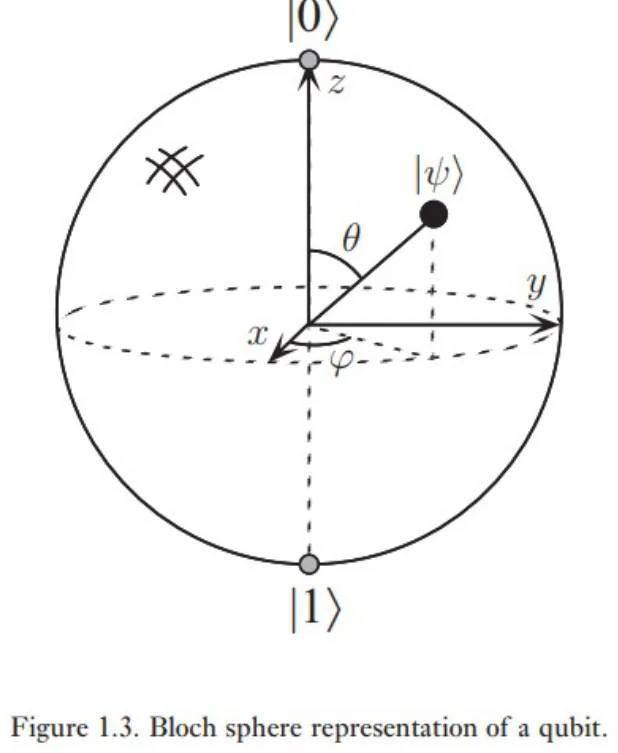
The quantum coin in Chapter 1 used cos θ|0⟩ + sin θ|1⟩. On the Bloch sphere, the angle is doubled (θ/2 inside). So the coin's θ = 45° is the Bloch θ = 90°, the equator. Same physics, different bookkeeping.
2.5 Single-qubit gates
Gates are the steps of a quantum program. Each is a small matrix that changes the state, and every gate is unitary, \(U^\dagger U = I\), which means it can be undone. (The dagger † means "flip rows and columns and take the complex conjugate"; it's the "undo" of a gate.) This is very different from a classical AND gate, where you can't recover the inputs from the output.
| Gate | Matrix | What it does in plain words |
|---|---|---|
| I (identity) | \(\begin{pmatrix}1&0\\0&1\end{pmatrix}\) | Nothing. Used as a placeholder (e.g. superdense coding bits 00). |
| X (Pauli-X, NOT) | \(\begin{pmatrix}0&1\\1&0\end{pmatrix}\) | Flips |0⟩ ↔ |1⟩. Half-turn about the x-axis. |
| Y (Pauli-Y) | \(\begin{pmatrix}0&-i\\i&0\end{pmatrix}\) | Flips and adds a phase. Half-turn about y. |
| Z (Pauli-Z, phase flip) | \(\begin{pmatrix}1&0\\0&-1\end{pmatrix}\) | Leaves |0⟩ alone, flips the sign of |1⟩. Turns |+⟩ into |−⟩. |
| H (Hadamard) | \(\tfrac{1}{\sqrt2}\begin{pmatrix}1&1\\1&-1\end{pmatrix}\) | Makes a 50/50 blend: |0⟩→|+⟩, |1⟩→|−⟩. Applying it twice undoes it. |
| S = √Z (phase) | \(\begin{pmatrix}1&0\\0&i\end{pmatrix}\) | Quarter-turn about z (90°). S† is the reverse: \(\mathrm{diag}(1,-i)\). |
| T (π/8 gate) | \(\begin{pmatrix}1&0\\0&e^{i\pi/4}\end{pmatrix}\) | Eighth-turn about z (45°). T† reverses it. |
| √X (SX) | \(\tfrac12\begin{pmatrix}1+i&1-i\\1-i&1+i\end{pmatrix}\) | Half a NOT: do it twice and you get X. |
| Rx(θ) | \(\begin{pmatrix}\cos\frac\theta2&-i\sin\frac\theta2\\-i\sin\frac\theta2&\cos\frac\theta2\end{pmatrix}\) | Rotate by θ about the x-axis. |
| Ry(θ) | \(\begin{pmatrix}\cos\frac\theta2&-\sin\frac\theta2\\ \sin\frac\theta2&\cos\frac\theta2\end{pmatrix}\) | Rotate by θ about y. Real amplitudes only, so it's the "biased coin" gate. |
| Rz(θ) | \(\begin{pmatrix}e^{-i\theta/2}&0\\0&e^{i\theta/2}\end{pmatrix}\) | Rotate by θ about z. |
| P(λ) (phase) | \(\begin{pmatrix}1&0\\0&e^{i\lambda}\end{pmatrix}\) | Adds phase λ to |1⟩. Equals Rz(λ) up to a global phase. The QFT is built from these. |
| U(θ,φ,λ) | \(\begin{pmatrix}\cos\frac\theta2&-e^{i\lambda}\sin\frac\theta2\\e^{i\varphi}\sin\frac\theta2&e^{i(\varphi+\lambda)}\cos\frac\theta2\end{pmatrix}\) | The general one-qubit gate: any rotation at all. |
Gate tables often include a "Native?" column. Native gates are the ones the hardware can do directly (on IBM chips: X, √X, Rz and a two-qubit gate). Everything else, including H, is compiled into native gates by the transpiler before running. That's the "compilation / transpilation" step you'll see in Chapter 3.
Qubit playground: gates on the Bloch sphere
Things to try: H then H (back to |0⟩). H then Z then H (lands on |1⟩). H then S then S (S twice = Z). Ry at 60° from |0⟩ (a 75/25 coin).
2.6 Multi-qubit gates
Single-qubit gates can never link two qubits together. For that, we need gates that act on two or three qubits at once. They're written as bigger matrices on the combined (tensor-product) state.
| Gate | Plain rule | Truth table on basis states |
|---|---|---|
| CNOT (CX) | Flip the target only if the control is 1 | 00→00 · 01→01 · 10→11 · 11→10 |
| CZ | Put a minus sign on |11⟩ only | |11⟩ → −|11⟩, others unchanged |
| SWAP | Exchange the two qubits | 01↔10 |
| Toffoli (CCX) | Flip the target if both controls are 1 | 110→111 · 111→110 |
| Fredkin (CSWAP) | Swap the two targets if the control is 1 | 101→110 · 110→101 |
CNOT's matrix is the identity on the top half (control = 0: do nothing) and an X on the bottom half (control = 1: flip). The Toffoli matrix is the same idea, 8×8, with X only in the last 2×2 block.
CNOT is how we create entanglement (next section). Toffoli is a reversible AND gate: with the target starting at 0, it computes target = a AND b. That proves a quantum computer can do anything a classical one can, so arithmetic inside Shor's algorithm is built from gates like these.
2.7 Superposition
Let's look at each phenomenon from three angles: quantum mechanics, physics, and its role in algorithms.
- Quantum mechanics: any isolated system can be a linear combination of basis states, \(\alpha|0\rangle+\beta|1\rangle\). The qubit is not secretly 0 or 1 that we just don't know. It really is in both until measured.
- The math behind it: linearity of Hilbert space. If |a⟩ and |b⟩ are allowed states, then \(c_1|a\rangle + c_2|b\rangle\) is also allowed.
- Physics: a photon polarised at 45° is a superposition of horizontal and vertical. In IBM's chips, a superconducting circuit's two lowest energy levels (from a Josephson junction) form the |0⟩ and |1⟩.
- Algorithms: applying H to each of n qubits creates an equal superposition of all \(2^n\) inputs:
"H on every qubit turns all-zeros into an equal mix of every number from 0 to 2ⁿ−1." With 3 qubits that's |000⟩ through |111⟩, each with amplitude 1/√8. This is the starting move of Deutsch–Jozsa, Grover, Bernstein–Vazirani, QPE and Shor.
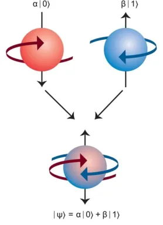
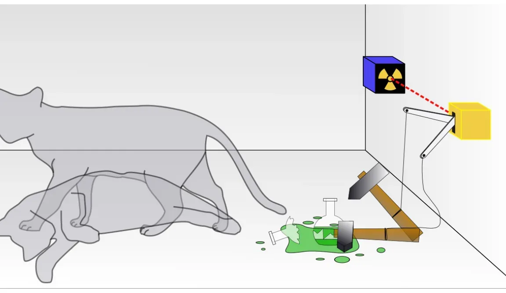
2.8 Entanglement
Definition: a multi-qubit state is entangled if it cannot be written as a product of individual qubit states. You can't describe each qubit on its own.
This is the Bell state (also called an EPR pair). Try to factor it: you'd need a product that gives |00⟩ and |11⟩ but no |01⟩ or |10⟩. Impossible. So the two qubits share one joint state.
Building a Bell pair
| Step | State of q0 q1 | What happened |
|---|---|---|
| Start | \(|00\rangle\) | Both qubits at 0 |
| 1. H on q0 | \(\tfrac{1}{\sqrt2}(|00\rangle+|10\rangle)\) | q0 is now a 50/50 blend |
| 2. CNOT (q0 controls q1) | \(\tfrac{1}{\sqrt2}(|00\rangle+|11\rangle)\) | In each branch, q1 copies q0 |
Measure both: you get 00 or 11, each 50% of the time, and never 01 or 10. Each result on its own is random, but the two always match.
There are four Bell states, and they form a complete basis for two qubits:
Measuring one qubit instantly tells you what the other will show, even across the galaxy. But you can't choose your result, so you can't send a message with it. The correlation only becomes visible when both sides compare notes over a normal (light-speed) channel.
A pair of magic dice that always land on the same number, wherever they are rolled. Each roll is still random. You can't make your friend's die show 6, but when you meet later you'll see you always matched. (Real entanglement is even stranger than this: Bell tests prove no hidden "pre-agreed" answer can explain it.)
Physics: entanglement comes from interactions, e.g. spin–spin coupling, or a crystal splitting one photon into an entangled pair (spontaneous parametric down-conversion). Algorithms: it enables teleportation, superdense coding, QKD, and VQE.
Einstein called this "spooky action at a distance" and suspected the particles had secretly agreed on their answers in advance, like the magic dice being rigged. John Bell worked out in 1964 that this could be tested, and experiments kept showing no such hidden agreement. The 2022 Nobel Prize in Physics went to Aspect, Clauser and Zeilinger for those experiments. So the circuit you're about to run is built on an effect that took a Nobel to confirm.
Mini circuit simulator
2.9 Interference
Here's the rule that makes quantum computers different from "just randomness":
Add the amplitudes first, then square. When two paths lead to the same outcome:
Same sign (in phase): they add up, constructive interference. Opposite sign (phase difference π): they cancel, destructive interference.
Classical probability would add the squares instead, \(|\psi_1|^2 + |\psi_2|^2\), and nothing could ever cancel.
Worked example: H twice
Start with |0⟩. After one H: \(\tfrac{1}{\sqrt2}(|0\rangle+|1\rangle)\). Apply H again. Each of the two branches splits again:
- |0⟩ branch → \(\tfrac12|0\rangle + \tfrac12|1\rangle\)
- |1⟩ branch → \(\tfrac12|0\rangle - \tfrac12|1\rangle\)
Now add: |0⟩ gets ½ + ½ = 1, |1⟩ gets ½ − ½ = 0. You always read 0. The two paths to |1⟩ cancelled, just like the dark stripes in the double slit. Put a Z between the two H's and the minus sign moves, so you always read 1 instead.
Two paths, one outcome
Noise-cancelling headphones. The headphones play a sound wave that is the exact opposite (phase-shifted by 180°) of the noise. Peak meets trough, and they cancel into silence. Quantum algorithms do this to wrong answers.
Algorithmic role: the Quantum Fourier Transform uses interference to isolate frequencies, and Grover's algorithm amplifies the right answer by constructive interference.
2.10 The no-cloning theorem
Statement: there is no operation (no unitary U) that copies an unknown quantum state:
Why (a 4-line proof): suppose such a U existed. It must copy the basis states: \(U|0\rangle|0\rangle = |00\rangle\) and \(U|1\rangle|0\rangle = |11\rangle\). Gates are linear, so for \(|\psi\rangle=\alpha|0\rangle+\beta|1\rangle\):
These only match when α or β is 0. So no machine can copy a general superposition. (Notice the left side is the Bell state: CNOT "tries to copy" and produces entanglement instead.)
Classical info is like printed text: reading it doesn't change it, so photocopying is free. Quantum info is like super-delicate wet paint: to learn it well enough to copy it, you have to touch (measure) it, and touching smudges the very details you wanted.
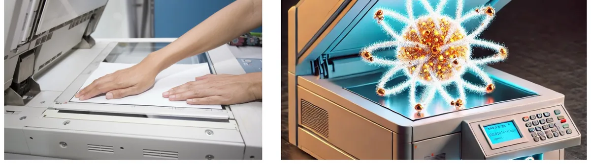
Quantum Key Distribution. An eavesdropper on a quantum channel can't copy the qubits passing by. Any attempt to measure them disturbs them and introduces detectable errors. This also blocks counterfeiting in "quantum money".
2.11 Randomness
Measurement outcomes are probabilistic by the Born rule, \(P(0)=|\alpha|^2,\ P(1)=|\beta|^2\). A photon polarised at 45° gives random horizontal/vertical results. That's fundamentally unpredictable, and Bell tests rule out "hidden variables" that secretly decide the answer.
| Dice roll | Qubit in |+⟩ |
|---|---|
| Only looks random. In theory its motion decides the result. | Truly random. Even with perfect knowledge of the state, you can't predict which outcome you'll get. |
QRNGs: Monte Carlo simulations, cryptographic key generation, blockchain security, fair lotteries.
Encryption keys are only as good as their randomness, and computers are bad at producing it. So Cloudflare films a wall of lava lamps at its San Francisco office and feeds the footage in as a source of unpredictability. A quantum generator gets there from physics directly. It's small enough now that a phone can have one: Samsung's Galaxy A Quantum (2020) shipped with a quantum random number chip.
2.12 Quantum teleportation
What it does: moves a qubit's state from Alice to Bob without sending the particle itself.
What you need: one shared entangled pair (Alice holds one half, Bob the other), and a normal phone or internet line to send 2 classical bits.
How it works, step by step
- Alice has a mystery state |ψ⟩ on q0. Alice and Bob share a Bell pair on q1 (Alice) and q2 (Bob).
- Alice applies CNOT (q0 → q1), then H on q0. This is a Bell measurement set-up: it rotates her two qubits so that measuring them in the normal basis tells her which Bell state they were in.
- Alice measures q0 and q1, getting two random bits m0 m1. Her original state is destroyed (as no-cloning requires).
- She phones Bob the two bits.
- Bob fixes his qubit: if m1 = 1 apply X; if m0 = 1 apply Z. His qubit is now exactly |ψ⟩.
| Alice's bits m0 m1 | 00 | 01 | 10 | 11 |
|---|---|---|---|---|
| Bob applies | nothing (I) | X | Z | X then Z |
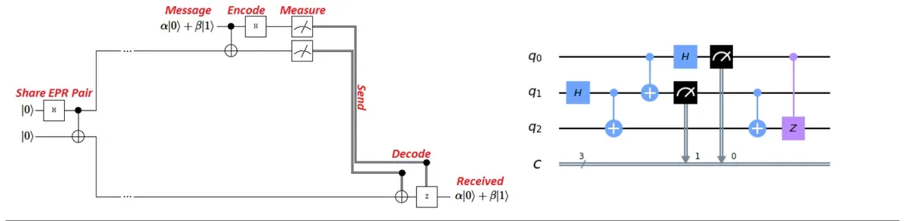
Teleport a qubit, one step at a time
- Prepare: q0 = |ψ⟩, q1 = q2 = |0⟩.
- H on q1.
- CNOT q1 → q2. Now q1 (Alice) and q2 (Bob) share a Bell pair.
- CNOT q0 → q1.
- H on q0.
- Alice measures q0 and q1, then sends the 2 bits to Bob.
- Bob applies X (if m1 = 1) and Z (if m0 = 1).
- No faster-than-light: Bob can't do anything useful until the 2 classical bits arrive.
- No copying: Alice's original is gone. The state moved; it wasn't duplicated. That's how teleportation "works around" no-cloning.
- Why it's useful: it's the basic "send-a-qubit" tool for quantum networks and distributed quantum computing (linking several QPUs).
2.13 Superdense coding
What it does: Alice sends 2 classical bits to Bob by transmitting only 1 qubit. It's teleportation's mirror image.
- Share: Alice and Bob share a Bell pair in advance (q0 Alice, q1 Bob).
- Encode: Alice applies one of four gates to her qubit: 00 → I, 01 → X, 10 → Z, 11 → X then Z (often written "XZ"). This turns the pair into one of the four Bell states.
- Send: Alice physically sends her one qubit to Bob.
- Decode: Bob applies CNOT (q0 → q1) then H on q0, and measures both. He reads Alice's two bits exactly.
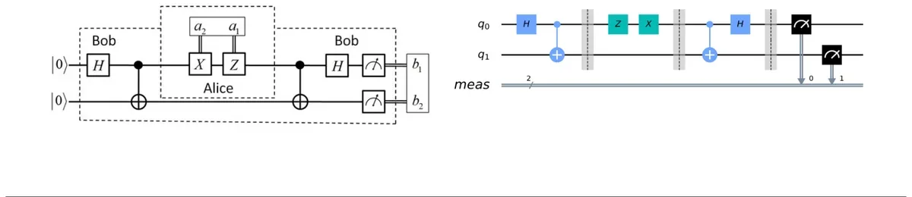
Send two bits with one qubit
| Feature | Teleportation | Superdense coding |
|---|---|---|
| Goal | Send a quantum state | Send two classical bits |
| What's sent | 2 classical bits | 1 qubit |
| Requires | 1 pre-shared Bell pair | 1 pre-shared Bell pair |
| What arrives | The exact qubit state | Two classical bits |
| Why it's cool | Moves a qubit state safely | Doubles the info per qubit sent |
They are mirror images. Each trades one resource for the other, and both only work because entanglement was shared in advance. Without that pre-shared pair, one qubit can carry at most one classical bit (Holevo's bound).
2.14 Summary table and the Bell-state lab
| Concept | Quantum definition | Example | Used in |
|---|---|---|---|
| Superposition | Linear combination of basis states | Hadamard state | H gate, every algorithm |
| Entanglement | Non-separable multi-qubit state | EPR / Bell pairs | Teleportation, QKD, VQE |
| Interference | Phase-dependent amplitude addition | Double slit, phase gates | Grover, QFT |
| No-cloning | No unitary duplicates an unknown state | QKD eavesdrop test | Information security |
| Randomness | Measurement obeys the Born rule | QRNG | Cryptography |
| Teleportation | State transfer via entanglement + 2 bits | Teleportation circuit | Quantum networks |
| Superdense coding | 2 classical bits via 1 qubit | Bell-pair communication | Quantum internet links |
The lab: "Simulate a Bell state, explain the histogram, then insert one more H"
In The Quantum Land you set the number of qubits, drag gates onto wires, the site translates your circuit to QASM code (a text format for circuits), sends it to a server that runs it many times (shots), and draws the averaged results as a histogram. Use the circuit simulator above to check your reasoning; pick the "Lab" examples from its list.
- Bell state histogram: two bars, 00 and 11, each about 50%. Why: after H + CNOT the state is \(\tfrac{1}{\sqrt2}(|00\rangle+|11\rangle)\); the Born rule gives ½ each, and 01/10 have amplitude 0.
- Add H on q0 at the end: the state becomes \(\tfrac12(|00\rangle+|01\rangle+|10\rangle-|11\rangle)\). All four bars at 25%. The correlation looks gone in this measurement, but it's hiding in the minus sign on |11⟩ (a phase you can't see in a histogram).
- Add the extra H on q0 before the CNOT instead: H·H = I by interference, so q0 is back to |0⟩, the CNOT does nothing, and you get 00 with 100%. Where you put a gate matters.
The Quantum Land and Qiskit label bits as q[3] q[2] q[1] q[0], with q0 on the right. For symmetric results like 00/11 it doesn't matter, but for 01 vs 10 it does. The Grover lab code even reverses its strings with k[::-1] to fix this.
Chapter 2 in ten lines
- State: α|0⟩ + β|1⟩, with |α|² + |β|² = 1.
- Born rule: P(0) = |α|², P(1) = |β|². Measuring collapses the state.
- Bloch sphere: every qubit is a point; gates are rotations.
- Gates are unitary (U†U = I), so they're reversible.
- H makes superpositions; H⊗ⁿ gives all 2ⁿ inputs at once.
- CNOT + H makes the Bell state (|00⟩+|11⟩)/√2, which is entangled.
- Interference: add amplitudes, then square. They can cancel.
- No-cloning: unknown states can't be copied (linearity).
- Teleportation: 1 Bell pair + 2 bits moves 1 qubit state.
- Superdense coding: 1 Bell pair + 1 qubit carries 2 bits.
Check yourself: Chapter 2
Quantum Algorithms
3.1 What is a quantum algorithm?
Definition: a quantum algorithm is a set of instructions written to run on a quantum computer. It uses superposition, entanglement, and interference to solve problems in ways classical logic cannot. The goal: measuring at the end gives the correct answer with high probability. The work breaks into four steps:
- Initialize qubits: prepare the starting state, often |0⟩.
- Apply quantum gates: transform the state (H, CNOT, phase gates, an oracle).
- Use quantum interference: design operations so useful outcomes become more likely and unwanted ones less likely.
- Measure the qubits: get classical results (0s and 1s) and interpret them.
A point that's easy to miss: the circuit is only one part of the algorithm. The full cycle is Initialize → Operate → Measure → Interpret. Classical set-up before the circuit and classical post-processing after it (like the gcd step in Shor) can matter just as much.
Why quantum algorithms matter now
- Unlocking quantum potential: hardware is useless without algorithms that give it problems to solve.
- Quantum speed-up: Shor's and Grover's algorithms show real advantages over classical approaches. Shor breaks public-key crypto (RSA, ECC); Grover speeds up brute-force search, which weakens symmetric keys like AES.
- Future innovation: better hardware enables more experiments, which leads to better algorithms.
The best one-line summary of the whole field:
"A quantum algorithm is a program that choreographs complex probability amplitudes so that right answers interfere constructively and wrong answers cancel out."
| Feature | Classical algorithm | Quantum algorithm |
|---|---|---|
| Unit | Bit: 0 or 1, definite | Qubit: superposition |
| State space | n bits = one of 2ⁿ states | n qubits = 2ⁿ amplitudes simultaneously |
| Operations | Deterministic logic gates | Unitary gates (probabilistic at measurement) |
| Output | Same input → same output | Same input → a distribution of outputs |
Or put simply: "Think of it as a program built for quantum hardware, not magic or a faster answer to every problem."
Sorting the famous algorithms: The ones covered in this course are Deutsch–Jozsa, Bernstein–Vazirani, Grover, QPE, Shor and VQE. Others you'll hear about: QAOA (optimisation), Simon's algorithm, HHL (linear equations) and quantum walks.
3.2 How a quantum algorithm is developed
Think of it as a winding road with these stops. It's a cycle: when results are inaccurate or noisy, you go round again. A useful split: steps 1–4 happen on paper and on a perfect simulator; steps 5–7 happen on a real, noisy chip.
- Problem framing: define the goal, inputs and outputs.
- Algorithm design: map the math to quantum primitives (superposition, oracle, QFT…).
- Circuit construction: write the circuit with gates and measurements (Qiskit).
- Validation on an ideal simulator: check amplitudes and probabilities with no noise.
- Compilation / transpilation: rewrite for a specific chip's native gates and wiring; optimise.
- Noise modelling and fake back-end: emulate realistic errors with a fake device (e.g. FakePerth).
- Execution: run on the chosen back-end with a chosen number of shots.
- Result analysis: collect counts, compute metrics (accuracy, fidelity).
- Iterate and optimise: reduce circuit depth, refactor sub-circuits.
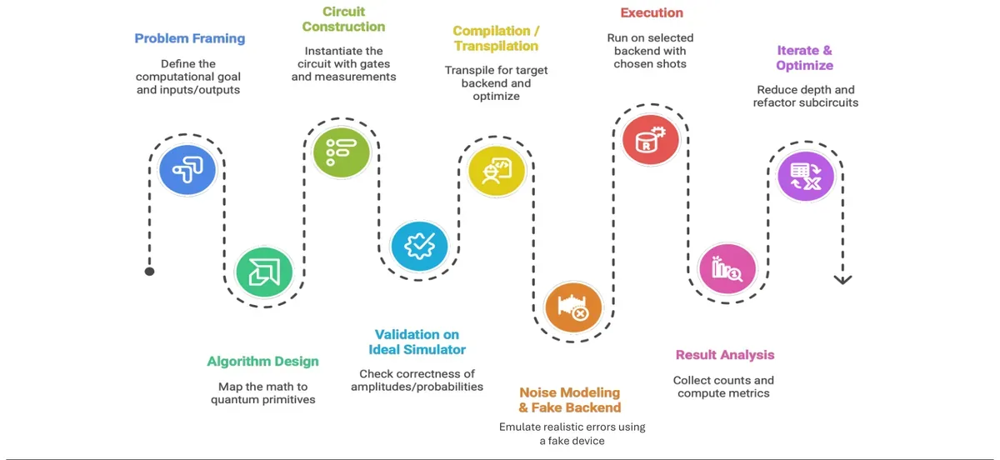
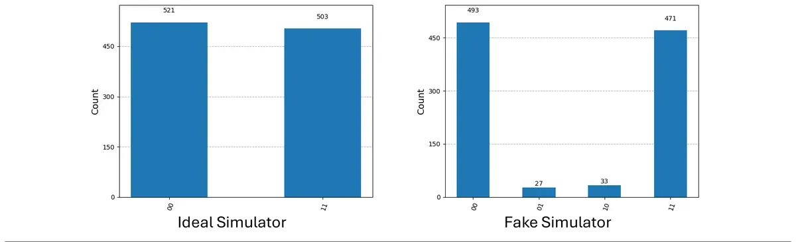
Normal software development (design → code → test → deploy → monitor), except the "test" step has two levels: a perfect simulator first (unit test), then a noisy fake chip (staging), then the real chip (production).
3.3 Why we transpile: the chip's wiring
Now the step most beginners skip: transpilation. Your circuit assumes any qubit can talk to any other, using any gate. A real chip can't do that, for two reasons:
- Wiring: qubits are only connected to their neighbours. The map of which qubits are wired together is the coupling map.
- Native gates: the chip only understands a few gates. IBM Heron chips: CZ, RZ, SX and X. Everything else (H, CNOT, Toffoli…) must be rewritten in those.
Example: IBM's 7-qubit chip. You want a CNOT between qubit 0 and qubit 6, but they aren't wired together. The transpiler moves qubit 0's state step by step with SWAP gates along the route 0 → 1 → 3 → 5, so it ends up next to 6. That's 3 SWAPs, and since each SWAP = 3 CNOTs, that's 9 extra noisy gates. Click two qubits below to see the route.
Route a CNOT on a 7-qubit chip
Click a control qubit, then a target qubit.
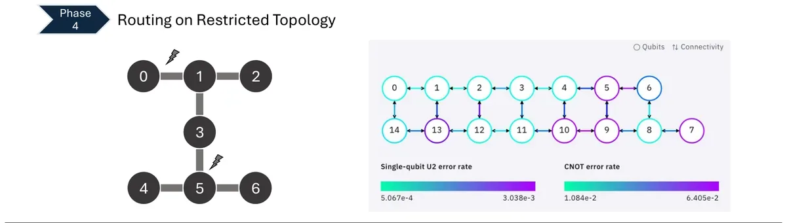
The 6 phases of transpilation
Every circuit is rewritten in six phases before it runs:
| Phase | What it does | Example |
|---|---|---|
| 1. Virtual optimization | Simplify before thinking about the chip: delete gates that cancel, merge neighbouring rotations | H then H = nothing; CNOT then CNOT = nothing |
| 2. Gate decomposition | Break 3-qubit gates into 1- and 2-qubit gates (chips can't do more) | Toffoli → 6 CNOTs + single-qubit gates |
| 3. Placement (layout) | Give each circuit qubit (q0, q1…) a physical qubit; pick wired, low-error ones | Good placement = fewer SWAPs later |
| 4. Routing | Add SWAPs when two qubits in a gate aren't neighbours | Each SWAP = 3 CNOTs, so each one adds noise |
| 5. Translation | Rewrite every gate into the chip's native gates | H, CNOT → CZ, RZ, SX, X on IBM Heron |
| 6. Physical optimization | Clean up again now the real layout is known: cut depth and 2-qubit gates | Qiskit optimization_level 0–3 |
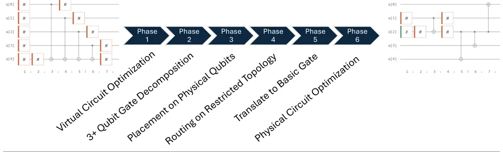
That's exactly the line transpile(qc, simulator) in every lab, and the Grover lab uses optimization_level=3. IBM's own tests show the best level depends on the circuit, so compare them.
Translating a speech for a foreign audience. First you cut the repetition (phase 1), split long sentences (2), assign who reads which part (3), arrange seats so speakers who need to talk to each other sit together, or pass notes along the row (4), translate into the local language (5), then polish the final text (6). Every extra note passed is a chance for a mistake.
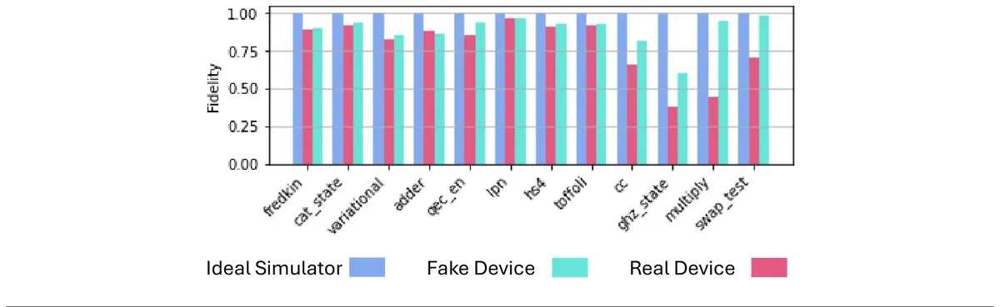
3.4 Oracles and quantum parallelism
The oracle
A quantum oracle is a black-box operation used to evaluate a function or check properties of an input without revealing its internal mechanism. You can't look inside; you can only query it. We compare algorithms by counting queries. Think of a locked vending machine: you only learn about it by pressing buttons.
There's a catch: quantum operations must be reversible. A function like AND isn't: if AND outputs 0, you can't tell whether the input was 00, 01 or 10. So the standard oracle keeps the input x and XORs the answer into an extra qubit y:
"The oracle preserves x and writes f(x) into y using XOR." Applying it twice gives back the original (y ⊕ f ⊕ f = y), so it's its own inverse and a valid unitary. That's why we need the auxiliary qubit.
Quantum parallelism
Quantum parallelism is the ability of a quantum computer to apply an operation to multiple inputs simultaneously by using a superposition of quantum states. Put H on every input qubit, then call the oracle once, with y = 0:
One call to \(U_f\), and the state now "contains" f(x) for every x. Example with f = AND on 2 bits: after H⊗H and one oracle call the state is \(\tfrac12\big(|00\rangle|0\rangle + |01\rangle|0\rangle + |10\rangle|0\rangle + |11\rangle|1\rangle\big)\). That's all 4 rows of the AND truth table after one call; classically that takes 4 calls.
- Outcome ≠ result: measuring gives you one random pair (x, f(x)). You can't read all the values out.
- Not an O(1) speedup: parallelism doesn't mean solving problems instantly.
- A building block: it only helps when followed by interference that turns a global property of f (is it constant? what's its period?) into a measurable answer.
Concretely: measuring the AND state above gives one random row, (00, 0), (01, 0), (10, 0) or (11, 1), each with 25%. "One measurement = one random row. No better than one classical query." The fix is to make f(x) show up as a phase (+ or −) instead of a bit flip, so it can interfere. That's phase kickback, next.
3.5 Phase kickback: the trick behind the oracles
Phase kickback is a quantum effect where a controlled operation transfers phase information from the target qubit to the control qubit's superposition. In three steps: control in superposition → controlled operation → relative phase changes. It sounds backwards, but it's how oracles "write" their answer into the qubits we measure. And it's useful because quantum computers can transform phase information into measurable outcomes through interference.
The key fact: the state \(|-\rangle = \tfrac{1}{\sqrt2}(|0\rangle-|1\rangle)\) is unchanged by X except for a sign, \(X|-\rangle = -|-\rangle\). So:
If f(x) = 1, the oracle flips the target, which just multiplies everything by −1. That minus sign "belongs" to |x⟩. The target is untouched; the information jumped ("kicked back") into the phase of the input register.
A two-line derivation shows it directly with the XOR oracle on target |−⟩:
| Protocol | Goal | What's transmitted | Role of entanglement |
|---|---|---|---|
| Phase kickback | Encode f's value into the control qubit | A relative phase shift | Indirect (via the controlled oracle) |
| Superdense coding | Send 2 classical bits with 1 qubit | 1 physical qubit | Pre-shared Bell pair required |
| Teleportation | Send 1 unknown quantum state | 2 classical bits | Pre-shared Bell pair required |
In short: teleportation and superdense coding move data between people; phase kickback works inside a circuit to compute.
A demo
- Preparation: q0: H → |+⟩. q1: X then H → |−⟩.
- Kickback: CNOT (q0 control, q1 target). The control changes from |+⟩ to |−⟩.
- Measurement: H on q0 turns |−⟩ into |1⟩. Result: 1 (100%).
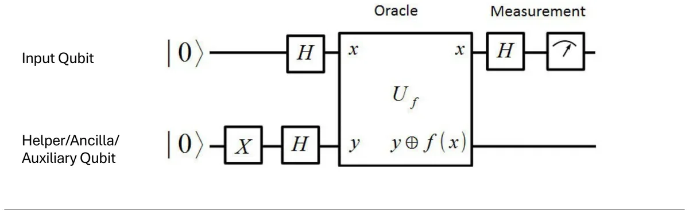
Load "Phase kickback" in the circuit simulator to see this.
Pushing off a wall on roller skates. You push the wall (the target), but the wall doesn't move; you do. The control qubit "pushes" on the target and gets the recoil.
3.6 Deutsch and Deutsch–Jozsa
The problem
You're given a black-box function f that takes bits and returns 0 or 1. You're promised it's one of two kinds:
- Constant: same output for every input (all 0s, or all 1s).
- Balanced: exactly half the inputs give 0, half give 1.
Which kind is it?
Deutsch (1 bit, 1985)
With one input bit there are four possible functions: f(0)=f(1)=0 and f(0)=f(1)=1 are constant; f(x)=x and f(x)=NOT x are balanced. Classically you must test twice (x = 0 and x = 1). Quantum needs once:
- Prepare 2 qubits as |0⟩|1⟩.
- Apply H to both: \(|+\rangle|-\rangle\).
- Apply the oracle. Phase kickback gives \(\tfrac{1}{\sqrt2}\big((-1)^{f(0)}|0\rangle + (-1)^{f(1)}|1\rangle\big)|-\rangle\).
- Apply H to the first qubit and measure: you get \(|f(0)\oplus f(1)\rangle\). 0 = constant, 1 = balanced.
⊕ means XOR: it's 0 if f(0) and f(1) are equal (constant), 1 if they differ (balanced). One query answered a question about both values. That's interference at work.
Deutsch–Jozsa (n bits, 1992)
Same idea with n input bits. Classically, in the worst case you must check \(2^{n-1}+1\) inputs (more than half) to be sure. Quantum: one query. After H⊗ⁿ, oracle, H⊗ⁿ, the amplitude of the all-zero outcome is:
If f is constant, all the signs agree and add up to ±1: you see 00…0 with certainty. If balanced, half are + and half are −, so they cancel to exactly 0: you never see 00…0.
The circuit as five boxes (the states ψ₀ to ψ₃ sit between the steps):
- Initialize n input qubits to |0⟩ and one target to |1⟩
- Create superposition: H on all (target becomes |−⟩)
- Apply the oracle \(U_f\): phase \((-1)^{f(x)}\) kicks back
- Apply H to the input qubits (interference)
- Measure: all 0s → constant, otherwise balanced
| Input bits n | Classical worst case \(2^{n-1}+1\) | Quantum |
|---|---|---|
| 3 | 5 queries | 1 query |
| 10 | 513 queries | 1 query |
| 32 | 2,147,483,649 queries | 1 query |
| 64 | ≈ 9.2 × 10¹⁸ (over 9 quintillion) | 1 query |
Constant or balanced?
Nobody needs to know whether a function is constant or balanced. Deutsch–Jozsa matters because it was the first clean proof that a quantum computer can beat a classical one at something (an exponential gap in queries for an exact answer). Its structure (H, oracle, H, measure) is the template for later algorithms. The family tree:
- Deutsch–Jozsa (1992): first deterministic separation between classical and quantum; pioneered phase kickback.
- Bernstein–Vazirani (1993/97): finds a hidden n-bit string in 1 query instead of n (Chapter 4).
- Simon's algorithm (1994): finds a hidden period with exponential speed-up; it directly inspired Shor.
- Shor (1994) and Grover (1996): the real-world impact, factoring and search.
3.7 Grover's search algorithm
The problem: find a marked item in an unsorted collection of N items. Formally, find x₀ where
Picture 1,000 closed boxes, one holds a prize. Classically you open them one by one: about N/2 on average, N in the worst case, so O(N). Grover (1996, Lov Grover) needs only about \(\sqrt N\) queries: a quadratic speed-up. For a million boxes, that's ~785 steps instead of ~500,000.
The four steps
- Initialise: H on every qubit. All N items get equal amplitude \(1/\sqrt N\).
- Oracle: flips the sign of the marked item's amplitude (multiplies it by −1) and leaves the rest alone. Probabilities don't change yet, because \((-a)^2 = a^2\). It just marks the answer.
- Diffusion ("inversion about the mean"): compute the average amplitude, then reflect every amplitude around it: \(a \to 2\bar a - a\). Because the marked one is now negative, it sits far below the mean and gets flung far above it. The others shrink slightly.
- Repeat steps 2–3 about \(\frac{\pi}{4}\sqrt{N}\) times, then measure.
Each oracle + diffusion pair rotates the state a little closer to the answer, by angle 2θ. After about (π/4)√N turns, you're pointing at it. With M marked items, use \(\frac{\pi}{4}\sqrt{N/M}\).
Worked example with real numbers (8 boxes, target |110⟩)
- Initialise: 3 qubits, 8 states, each amplitude \(1/\sqrt8 \approx 0.354\), probability 12.5%.
- Oracle: |110⟩'s amplitude becomes −0.354. Every probability is still 12.5%.
- Mean: \(\bar a = \frac{7(0.354) - 0.354}{8} \approx 0.265\).
- Reflect about the mean (\(2\bar a - a\)): wrong answers become \(2(0.265) - 0.354 \approx 0.177\); the target becomes \(2(0.265) + 0.354 \approx 0.884\).
- Probabilities: target \(0.884^2 \approx\) 78.1%; each other state \(0.177^2 \approx 3.1\%\).
| Iterations | 0 | 1 | 2 | 3 |
|---|---|---|---|---|
| P(target), N = 8 | 12.5% | 78.1% | 94.5% | 33.0% |
Two iterations is the sweet spot (\(\frac\pi4\sqrt8 \approx 2.22 \to 2\)). A third overshoots and the probability crashes to 33%. Reproduce every number above in the lab below (3 qubits, marked item 110).
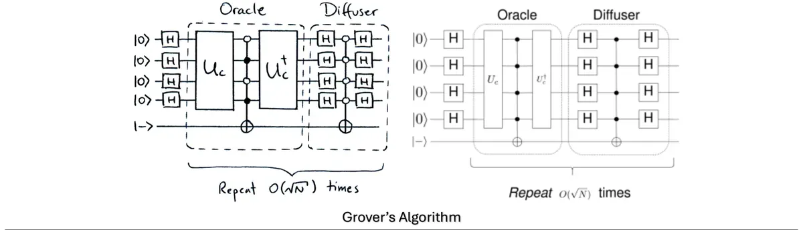
Watch the amplitudes move
Bars show amplitudes: teal above the line is positive, coral below is negative. The dashed gold line is the mean. Keep pressing past the optimum and watch the probability fall again.
Grover overshoots. Past the optimal number of iterations, the success probability goes back down (the probability oscillates). So you must know roughly how many solutions there are. With 2 qubits (N = 4), one iteration gives exactly 100% (try target 10).
- Speeding up any brute-force search: constraint problems, SAT solvers, database lookups by condition.
- Cryptography: Grover could search a key space of size N in √N steps. That's why AES-128 is considered weakened (to ~64-bit strength) and AES-256 is recommended for the post-quantum world.
- Its generalisation, amplitude amplification, is the core of quantum Monte Carlo for finance.
3.8 Shor's algorithm
Peter Shor, 1994: a quantum algorithm that factors a composite integer N into its primes in polynomial time. It uses Quantum Phase Estimation and the Quantum Fourier Transform to find the period of a modular arithmetic function.
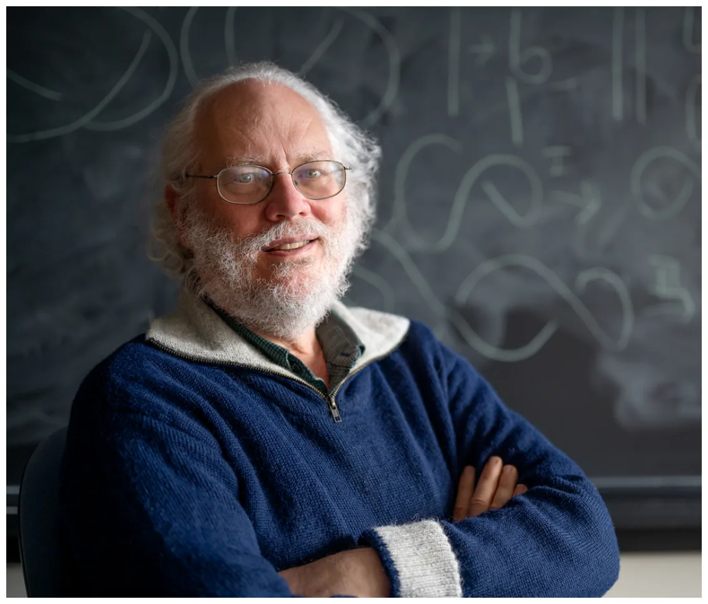
| Best classical (General Number Field Sieve) | Shor (quantum) | |
|---|---|---|
| Time | \(O\!\left(e^{c\,(\log N)^{1/3}(\log\log N)^{2/3}}\right)\), sub-exponential | \(O\big((\log N)^3\big)\), polynomial |
RSA encryption (used in HTTPS, banking, SSH, digital signatures) is safe only because multiplying two big primes p × q = N is easy, while recovering p and q from N is astronomically hard for classical computers. A large fault-tolerant quantum computer running Shor would break it. The same algorithm also breaks elliptic-curve crypto. That's why NIST standardised post-quantum algorithms in 2024, and why governments worry about "harvest now, decrypt later" (recording encrypted traffic today to decrypt it in the future).
How close is the threat?
Estimates of how many qubits it would take to break RSA-2048 keep shrinking as algorithms improve, while chips keep growing:
The gap is still huge (thousands of times) and the estimates assume noisy qubits with heavy error correction. In short: Shor breaks RSA/ECC (HTTPS, banking, software updates) because it solves their math fast, but not yet: it needs an error-corrected machine.
The big idea: turn factoring into period finding
Pick a random number a. Look at the powers of a, mod N: \(a^1, a^2, a^3, \dots \pmod N\). This sequence repeats. The length of the repeat is the period (or order) r: the smallest r with \(a^r \equiv 1 \pmod N\). If you know r, a little classical arithmetic gives the factors.
| Symbol | Meaning |
|---|---|
| N | The number you want to factor (e.g. 15) |
| a | A random number you pick, 1 < a < N (e.g. 7) |
| r | The period: smallest positive integer with \(a^r \equiv 1 \pmod N\). Found by the quantum part |
| p, q | The two factors you're looking for, with p × q = N |
Part 1: classical setup and reduction
- Pick a random a. Compute gcd(a, N). If it isn't 1, you got lucky: that's already a factor.
- Hand a and N to Part 2 to find r.
- If r is odd, or \(a^{r/2} \equiv -1 \pmod N\), pick a new a and retry.
- Otherwise the factors are \(\gcd(a^{r/2}-1,\,N)\) and \(\gcd(a^{r/2}+1,\,N)\).
Why it works: \(a^r - 1 = (a^{r/2}-1)(a^{r/2}+1)\) is a multiple of N, but (thanks to the checks) neither bracket alone is. So each bracket must share a factor with N, and gcd pulls it out. gcd (greatest common divisor) is fast to compute with Euclid's algorithm.
Part 2: quantum order-finding
- Put all exponents x into one superposition (H gates on a "control register").
- Compute \(a^x \bmod N\) into a second register for all x at once (controlled modular exponentiation, \(U_a^{2^j}\) gates). The registers become entangled.
- Apply the inverse Quantum Fourier Transform to the control register. It turns the repeating pattern into sharp peaks (Chapter 4).
- Measure: you get a number m with \(m / 2^t \approx s/r\) for some random s. The continued fractions algorithm turns that fraction into r.
Here's why this is phase estimation. Define the gate "multiply by a": \(M_a|x\rangle = |a x \bmod N\rangle\). Its eigenvalues are \(e^{2\pi i k/r}\) for k = 0 … r−1, so its phases are fractions k/r with the period hidden in the denominator. And the easy start state |1⟩ is an equal mix of all those eigenvectors:
How many control qubits? \(m = 2\lceil\log_2 N\rceil + 1\). Example: suppose r = 6, so the phase to find is 1/6. With m = 5, the best approximation is y = 5 out of 32 (about a 68% chance), and 32/5 = 6.4 rounds to 6, which is correct. With m = 4, the best is 3/16, and 16/3 = 5.33 rounds to 5, which is wrong. Too few qubits give a wrong period.
Cost and success: each controlled \(M_a^{2^j}\) costs O(n²) gates (n = number of bits in N) and there are O(n) of them, so O(n³) in total. One run fails (r odd, or trivial gcd) with probability at most ½, so a few repeats are enough. The powers \(a^2, a^4, \dots \bmod N\) are computed on a normal computer first.
Worked example: factoring 15
N = 15, pick a = 7. gcd(7, 15) = 1, so no lucky shortcut. Powers of 7 mod 15:
| x | 7ˣ | 7ˣ mod 15 |
|---|---|---|
| 1 | 7 | 7 |
| 2 | 49 | 4 |
| 3 | 343 | 13 |
| 4 | 2401 | 1 → r = 4 |
r = 4 is even. \(7^{2} = 49\). Then \(\gcd(48, 15) = 3\) and \(\gcd(50, 15) = 5\). So 15 = 3 × 5.
Same number, different a
Now use a = 2. Step 1: gcd(2, 15) = 1, so use order finding. Step 2: 2¹ = 2, 2² = 4, 2³ = 8, 2⁴ = 16 ≡ 1 (mod 15), so r = 4. Step 3: x = 2^{r/2} = 2² = 4. Step 4: gcd(4 − 1, 15) = 3 and gcd(4 + 1, 15) = 5. Different a, same period, same factors. (This is exactly what the Shor lab prints for N = 15.)
Shor's recipe on any small number
It's tempting to say "r = (p−1)(q−1)". That number is Euler's totient φ(N), which RSA uses to build its private key. The period r that Shor finds is the order of a specific a, which divides φ(N) but is usually smaller. For N = 15: φ(15) = 2 × 4 = 8, while the order of 7 is 4. The conclusion is the same: find r, break RSA.
3.9 Algorithms for today's chips: VQE and QAOA
Shor and Grover need big, error-corrected machines. What can we run now, on 50 to a few hundred noisy qubits where circuits must stay short? The answer is the hybrid loop:
- Quantum chip runs a short circuit with some rotation angles θ and measures a cost
- Classical computer (an optimizer) picks better angles
- Repeat until the cost stops improving
- VQE (Variational Quantum Eigensolver): finds the lowest energy (the "ground state") of a molecule.
- QAOA (Quantum Approximate Optimization Algorithm): finds good answers to optimisation problems like routing and scheduling.
VQE in detail
Input: a Hamiltonian H (the energy operator of the system) and a parametrized circuit (the "ansatz" or variational form) that prepares a trial state \(|\psi(\theta)\rangle\). Cost: the energy of that trial state:
"The average energy you'd measure in the state the circuit makes." By the variational principle, it can never be lower than the true ground energy, so pushing it down gets you closer to the answer.
- Start from |0⟩ and prepare a reference state (IBM's example: X on qubit 0).
- Apply the variational form \(U_V(\theta)\) (IBM's example: RZ and RY on each qubit plus one CX, 8 angles in total).
- Estimate C(θ) on the quantum computer. H is written as a weighted sum of parts (e.g. weights 2, −2, 3, −3); each part is measured and the results are added up.
- A classical optimizer (e.g. COBYLA) picks the next angles.
- Repeat until it converges.
In IBM's run, the simulator found a cost of about −6.0 after 136 evaluations; the real hardware ended several percent off after 96. Every new set of angles means running the circuit again, so IBM groups all runs in one session to queue only once.
A one-qubit VQE
Hamiltonian \(H = Z + 0.8\,X\). Trial state \(R_y(\theta)|0\rangle\), so the cost is \(C(\theta) = \cos\theta + 0.8\sin\theta\). Move θ yourself, or let the "classical optimizer" take gradient steps.
Timeline: now (NISQ) is VQE, QAOA and simulation; later (error-corrected) is Shor and Grover, with IBM targeting about 2029. VQE and QAOA can get stuck in local minima or "barren plateaus", so their advantage over classical methods is not yet proven.
3.10 Limitations and comparison
| Algorithm | Classical | Quantum | Speed-up |
|---|---|---|---|
| Deutsch–Jozsa | Up to \(2^{n-1}+1\) queries to be sure | 1 query | Exponential (in queries) |
| QFT | Fast Fourier Transform: about \(n\cdot2^n\) steps | About \(n^2\) gates | Exponential (but output is hidden in amplitudes) |
| Grover | About N steps | About \(\sqrt N\) steps | Quadratic |
| Shor | GNFS: sub-exponential | Polynomial, \(O((\log N)^3)\) | Exponential |
Two families of algorithms
Shor, Grover, QPE (phase estimation), HHL (linear equations).
Clear theoretical speed-ups, but they need a big, reliable machine that doesn't exist yet.
VQE (chemistry), QAOA (optimisation).
Small noisy machines working with a normal computer. They run today, but their advantage over classical methods is unproven.
Hardware limits
- Noise: qubits lose their state quickly, and gates make errors.
- Error correction: one logical qubit may need hundreds to thousands of physical qubits.
- Scale: today's machines have hundreds to a few thousand qubits. Shor on RSA-2048 needs close to a million noisy qubits (Gidney, 2025, "less than a million").
Algorithm challenges
- Few real speed-ups: only structured problems benefit. Grover's quadratic gain is often eaten by slow quantum clock speeds and error-correction overhead.
- Input and output: loading classical data into qubits can cost as much as the speed-up saves, and each measurement gives very little information.
- No guarantees: VQE and QAOA can get stuck in local minima and "barren plateaus" (flat landscapes where training stalls). Classical methods keep matching claimed advantages.
- Practical limits: deep circuits are destroyed by noise, qubit connectivity is limited, and debugging is hard (you can't peek at a state without destroying it).
Five limits
- Noise limits circuit size; reliable machines around 2029
- Speed-ups only for special problems, not everything
- Measurement gives one answer per shot
- Loading big data into qubits is slow
- Expensive: extreme cooling (near −273 °C), many physical qubits per logical qubit
Side by side
| Grover | QPE | Shor | VQE | |
|---|---|---|---|---|
| Problem | Find one item in an unsorted list | Find the rotation (phase) of a gate | Break a number into factors | Find the lowest energy of a system |
| Key gates | H, oracle, diffusion | H, controlled-U, inverse QFT | QPE with U = multiply by a (mod N) | X, RZ, RY, CX |
| Output | The marked item | The phase | The order r, then the factors | The lowest energy and best angles |
| Hardware needs | Repeat oracle + diffusion a fixed number of times | Deep: controlled-U count doubles per extra qubit | Many qubits, deep circuits (≈ n³) | Short circuit, many repeated runs with a classical optimizer |
Chapter 3 in twelve lines
- Initialize → gates → interference → measure (→ interpret). Wrong answers cancel.
- Development: frame, design, build, simulate, transpile, fake-noise, run, analyse, iterate.
- Transpiling: optimize, decompose, place, route (SWAPs), translate to native gates, optimize.
- Oracle: \(U_f|x\rangle|y\rangle = |x\rangle|y\oplus f(x)\rangle\), reversible thanks to XOR.
- VQE/QAOA: hybrid loop of a short circuit plus a classical optimizer; runs on NISQ today.
- Parallelism evaluates f on all inputs, but you can only read one: you need interference.
- Phase kickback: \(U_f|x\rangle|-\rangle = (-1)^{f(x)}|x\rangle|-\rangle\).
- Deutsch–Jozsa: constant vs balanced in 1 query (classical: \(2^{n-1}+1\)).
- Grover: oracle flips sign, diffusion reflects about mean; ~(π/4)√N iterations.
- Grover overshoots if you iterate too long.
- Shor: factoring → finding the period r of aˣ mod N.
- Factors = gcd(a^{r/2} ± 1, N); retry if r is odd or a^{r/2} ≡ −1.
- Fault-tolerant algorithms (Shor, Grover, QPE, HHL) vs NISQ (VQE, QAOA).
Check yourself: Chapter 3
Quantum Fourier Transform
Chapter 4 does two jobs. It introduces the Quantum Fourier Transform (QFT), the engine inside Shor and phase estimation. Then it revisits the algorithms as hands-on labs: QFT-3, BV-8, QPE, Grover on 3 qubits, and Shor. Let's open with a game.
4.1 Game: find the hidden beat
Goal: discover the "hidden period" in a repeating pattern, just like the QFT finds hidden periodicities in quantum data. Listen (or watch the dots), then guess how many claps make up one repeat. The loud clap marks the start of each repeat.
Find the Hidden Beat!
When the period is 3, you hear it instantly. When it's 10, you need to concentrate. And if the pattern is long and noisy, your ears give up. The QFT is a mathematical ear that finds the period of a pattern hidden inside 2ⁿ amplitudes, using only about n² gates.
4.2 The classical Fourier transform
The Fourier Transform (FT) expresses a signal as a sum of sine waves with different frequencies. It converts a signal from the time domain ("what happens when") into the frequency domain ("which rhythms are in it").
A smoothie and its recipe. The time signal is the blended smoothie. The Fourier transform un-blends it and tells you: 50% banana, 30% mango, 20% milk. In sound: a chord goes in, and out come the individual notes.
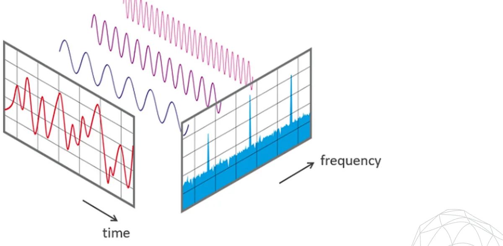
For a list of N numbers \(x = (x_0, \dots, x_{N-1})\), the Discrete Fourier Transform (DFT) produces a new list \(y = (y_0, \dots, y_{N-1})\):
For each frequency k, walk through the signal, spin each sample \(x_j\) by angle \(2\pi jk/N\), and add everything up. If the signal really repeats at that frequency, the spins line up and add to something big. If not, they point in random directions and cancel. Interference again.
MP3 and JPEG compression, Shazam song recognition, Wi-Fi and 4G/5G signals, MRI image reconstruction, audio equalisers, earthquake analysis. The fast algorithm for it, the FFT, is one of the most important algorithms ever written.
4.3 The Quantum Fourier Transform
In quantum computing, the amplitudes \(\alpha_j\) of the basis states \(|j\rangle\) play the role of the classical numbers \(x_j\). The QFT does the DFT on those amplitudes. On a single basis state:
Every output |k⟩ gets the same size, 1/√N, so a single input becomes a perfectly even superposition. The information is in the phases: output k's arrow is turned by j·k/N of a full circle.
- N: total number of basis states (2ⁿ for n qubits). j: input basis-state index. k: index of each output state.
- 1/√N: normalisation, keeps total probability = 1.
- \(e^{2\pi ijk/N}\): the phase factor applied to each output state.
It changes the computational basis (|0⟩, |1⟩, …) into the Fourier basis (states with evenly spaced phases). And the QFT matrix is unitary (\(U^\dagger U = I\)), so it's a valid quantum gate.
For one qubit (N = 2) the QFT is just the Hadamard gate. For two qubits (N = 4, and \(e^{2\pi i/4} = i\)):
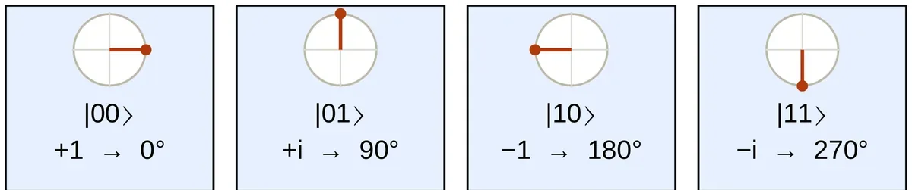
Below, each dial is one output amplitude. Pick an input |j⟩ and watch how fast the hands turn as k increases. The bigger j, the faster they spin. That "spin speed" encodes j.
QFT phase clocks (3 qubits)
The product form: why it's cheap
The QFT output turns out to be a product of single-qubit states, one per qubit:
Each output qubit is an equal blend of |0⟩ and |1⟩ with its own phase. One qubit turns j/2 of a circle, the next j/4, the next j/8, like the hands of a clock: second hand, minute hand, hour hand. Because each qubit only needs one H and a few phase rotations, the whole circuit is small.
"Exponential compression": the QFT acts on all 2ⁿ amplitudes at once using only ~n² gates, while the classical FFT needs ~n·2ⁿ steps. But remember the catch from Chapter 3: you can't read all the amplitudes out. The QFT is only useful as a step inside algorithms where one measurement is enough, like period finding.
4.4 Building the QFT circuit, and its inverse
Goal: analyse the periodicity (repeating patterns) encoded in quantum states. The construction for n qubits:
- For each qubit j from 0 to n−1:
- Apply H to qubit j.
- For each later qubit k > j: apply a controlled rotation \(R_m\) with qubit k as control and j as target, where \(m = k - j + 1\).
- Finally, reverse the order of the qubits with SWAPs (the "bit reversal").
R₂ is a 90° phase (π/2), R₃ is 45° (π/4), R₄ is 22.5°, and so on: smaller and smaller twists.
The 2-qubit QFT
- H on q0
- Controlled-P(π/2) from q1 → q0
- H on q1
- SWAP q0 and q1
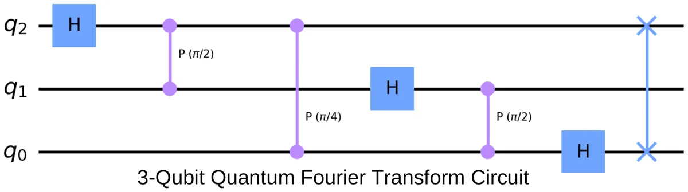
Gate count: n Hadamards + n(n−1)/2 controlled rotations + about n/2 swaps = O(n²). For 3 qubits: 3 H + 3 CP + 1 SWAP.
Inverse QFT (QFT⁻¹ or QFT†)
- Same as the QFT but with negative phase rotations.
- Circuit: reverse the gate order of the QFT, and replace each \(R_k\) by \(R_k^\dagger\) (negative angle). Swaps go at the start (they're their own inverse).
- \(R_k R_k^\dagger = I\), and \(\mathrm{QFT}\cdot\mathrm{QFT}^{-1} = I\).
Lab demo: build the 2-qubit QFT and verify the inverse. QFT then QFT⁻¹ on |00⟩ gives |00⟩ with 100%: a single bar of 1024 counts. Load "QFT then inverse QFT" in the circuit simulator to confirm.
In Shor and QPE, the information arrives as phases on the control qubits (via phase kickback), in exactly the "Fourier basis" form. The inverse QFT converts those phases back into a plain binary number you can measure. So in practice, QFT⁻¹ is the one you'll actually use most.
4.5 Finding a hidden period with the QFT
Example: the repeating sequence [1, 2, 3, 1, 2, 3, 1, 2, 3, …] has true period r = 3. In a quantum computer, we encode a period like this: a state that has equal amplitude on every r-th basis state (e.g. |0⟩, |3⟩, |6⟩, …) and zero elsewhere. Apply the QFT, and the output has sharp peaks at multiples of N/r.
Measure, and you get one of those peaks. From the spacing between peaks (or from k/N ≈ s/r) you work out r. The offset x₀ only changes phases, not where the peaks are, which is why it doesn't matter where the pattern starts.
Period finder
Does the number of qubits matter? Yes.
Running the QFT on n qubits means working in a space of size N = 2ⁿ. The peaks land at multiples of N/r, so you need N to be big enough compared with r. For period r = 4:
| Qubits n | N = 2ⁿ | Period r | N / r | What you see |
|---|---|---|---|---|
| 1 | 2 | 4 | 0.5 | Too small: the pattern doesn't even fit once |
| 2 | 4 | 4 | 1 | Only one repeat: a single peak at 0, no information |
| 3 | 8 | 4 | 2 | Peaks at 0, 2, 4, 6 |
| 4 | 16 | 4 | 4 | Peaks at 0, 4, 8, 12 |
| 5 | 32 | 4 | 8 | Peaks at 0, 8, 16, 24 |
What if N isn't a multiple of r (like r = 3 with N = 16)? The peaks get blurry: probability leaks into neighbouring k's. More qubits make the peaks sharper and the estimate of r more accurate. That's exactly why Shor uses about 2·log₂N counting qubits. Try r = 3 above with 3 qubits and then 7 qubits.
What if we don't know the period? One last example, [1,2,3,1,2,3,1,2,3,1, 1,2,3,…], hides a bigger repeat (length 10) inside a smaller one. The QFT still finds it: it reveals every rhythm present, which is something your ears struggled with in the game.
4.6 Bernstein–Vazirani (BV)
The problem: a black box hides a secret bit string a. When you query it with x, it returns the dot product mod 2:
It counts how many positions are 1 in both a and x, and tells you whether that count is odd.
- Classical: n queries. Ask x = 100…0 to learn a₁, then 010…0 to learn a₂, etc. One bit per query.
- Quantum: 1 query, no matter how long a is.
Circuit
- Initialise \(|0\rangle^{\otimes n}|1\rangle\) and apply H to all qubits (the last one becomes |−⟩).
- Apply \(U_f\): a CNOT from each input qubit where \(a_i = 1\) to the last qubit. Phase kickback gives \(\frac{1}{\sqrt{2^n}}\sum_x (-1)^{a\cdot x}|x\rangle\).
- Apply H again to the first n qubits and measure. The result is exactly a.
Why: H⊗ⁿ is its own inverse, and H⊗ⁿ|a⟩ is exactly \(\frac{1}{\sqrt{2^n}}\sum_x (-1)^{a\cdot x}|x\rangle\). So the last H's turn the state back into |a⟩. Interference concentrates 100% of the probability on the secret.
The lab example uses secret_number = '1011001' (7 bits), so 7 + 1 = 8 qubits and 7 classical bits. That's the "BV-8" lab. BV is an extension of Deutsch–Jozsa: both use an oracle and phase kickback.
BV-8: type a secret and recover it in one query
In a Qiskit drawing for '1011001', the CNOTs come from q0, q3, q4 and q6. That's because Qiskit reads the string right-to-left (q0 = last character). Here I draw q0 = first character, so the CNOTs sit on q0, q2, q3, q6. Both are correct, just mirrored.
4.7 Quantum Phase Estimation (QPE)
The problem: you have a gate U and one of its eigenstates |ψ⟩, a special state that U doesn't change except for a phase:
Find φ. (Eigen = "own" in German: |ψ⟩ is U's "own" state, and \(e^{2\pi i\varphi}\) is its eigenvalue.)
The circuit
- Two registers: n counting qubits in |0⟩ and the target register in |ψ⟩: \(|0\rangle^{\otimes n}\otimes|\psi\rangle\).
- H on every counting qubit.
- For each counting qubit j (0 to n−1): apply \(U^{2^j}\) to the target, controlled by qubit j. By phase kickback, counting qubit j picks up phase \(e^{2\pi i\,2^j\varphi}\).
- Apply the inverse QFT to the counting register.
- Measure: you get an integer m, and \(\varphi \approx m/2^n\).
After step 3 the counting register is exactly in "QFT form" with j replaced by \(2^n\varphi\). The inverse QFT un-does it and hands you \(2^n\varphi\) as a binary number. With n counting qubits you get φ to n binary digits.
The lab: U = P(2π·0.25), target |1⟩, so φ = 0.25. With n = 4 counting qubits the result is 0100 = 4, and 4/16 = 0.25. Exact, because 0.25 = 0.0100 in binary fits in 4 bits.
Estimate a phase
Example: finding the T gate's rotation. The T gate turns |1⟩ by 1/8 of a full circle (\(e^{i\pi/4} = e^{2\pi i\cdot 1/8}\)). Can QPE find 1/8? Step 1: an X gate turns the target into |1⟩. Step 2: H on 3 counting qubits. Step 3: apply controlled-T 1, 2 and 4 times (1/8, 2/8, 4/8 of a turn). Step 4: the inverse QFT turns those rotations into bits. Measured 001 = 1, and 1/8 = φ. Try the "T gate" button.
Accuracy and cost: when φ doesn't fit in n bits (try 1/3), the histogram spreads, and QPE returns the closest n-bit value at least ~40% of the time (exactly \(4/\pi^2 \approx 40.5\%\)). So run it several times and take the most common answer. More counting qubits give a sharper peak, but the number of controlled-U applications doubles with each extra qubit, and deep circuits suffer on noisy hardware. Classically, estimating a phase to n bits this way would take about 2ⁿ uses of U; QPE needs O(n) qubits.
- Shor's algorithm: order-finding is QPE, with U = "multiply by a mod N". Its phases are s/r, so QPE reveals the period r.
- Quantum chemistry: with U = time evolution under a molecule's Hamiltonian (energy operator), the phases are the molecule's energy levels. That's the fault-tolerant way to compute reaction energies for drugs and catalysts (Chapter 7).
- HHL (solving linear equations) uses QPE to invert a matrix.
4.8 Grover in the lab
You know how Grover works from Chapter 3. Here's how the lab actually builds it for 3 qubits with marked_state = "101".
The oracle (flip the sign of |101⟩ only)
- Apply X to every qubit where the target bit is 0. This maps |101⟩ to |111⟩.
- Apply a multi-controlled Z on |111⟩, built as H · MCX (multi-controlled X, Toffoli for 3 qubits) · H on the last qubit.
- Undo the X gates.
The diffuser (inversion about the mean)
H on all → X on all → (H · MCX · H on the last qubit) → X on all → H on all. Mathematically this is \(2|s\rangle\langle s| - I\), where |s⟩ is the equal superposition: "reflect about the average".
How many iterations?
So about 945 of 1024 shots land on 101. The lab prints "Optimal Grover iterations: 2" and then reverses each result string (k[::-1]) to undo Qiskit's bit order before plotting.
Plot success probability against the fraction of marked items M/N: classical random guessing is a straight line, while Grover with one iteration (\(\sin^2 3\theta\), with \(\sin^2\theta = M/N\)) reaches 100% at M/N = ¼ and drops back to 0 at ¾. With too many solutions, Grover can do worse than guessing.
4.9 Shor in the lab
The full recipe:
- Choose a random a < N with gcd(a, N) = 1.
- Define the periodic function \(f(x) = a^x \bmod N\).
- Find the period r with a quantum circuit: Hadamards → controlled modular exponentiation (\(U_a^{2^0}, U_a^{2^1}, \dots\)) → inverse QFT → measure.
- Compute r from the measurement by classical post-processing (continued fractions).
- Factors: \(p = \gcd(a^{r/2}-1, N)\), \(q = \gcd(a^{r/2}+1, N)\).
Look closely and you'll see step 3 is exactly QPE, with U = multiplication by a mod N. That's why the lab's quantum_order_estimation is literally a QPE circuit: H on 6 counting qubits, phase rotations \(2\pi\cdot 2^q/r\), inverse QFT, measure. (It "cheats" by computing the true r classically to set the phases, since a full modular-exponentiation circuit is too big for a lab.)
Reading the lab output
- For 15 with a = 2: \(2^4 = 16 \equiv 1\), so r = 4. \(2^2 = 4\); gcd(3, 15) = 3, gcd(5, 15) = 5.
- For 55 with a = 36: the true order is 5 (odd), so it retries. For a = 39 the true order is 10, but 6 counting qubits estimated 11. Estimates can be wrong, and that's one reason Shor is a repeat-until-success algorithm. In the end, a random a happened to share a factor with 55 (the "lucky gcd" step), giving 5 × 11.
Compare the number of operations against the number of digits: the classical curve shoots up towards 10³⁰ for 300-digit numbers, while Shor's stays low and nearly flat. That gap is the exponential speed-up.
4.10 Comparison and lab summary
| Algorithm | Problem | Classical | Quantum | Output / insight |
|---|---|---|---|---|
| QFT | Change basis of quantum amplitudes | FFT: O(n·2ⁿ) | O(n²) = O((log N)²) gates | Basis change; reveals periods |
| BV | Find hidden bit string a | n queries | 1 query | Reveals a |
| QPE | Estimate eigenphase φ in \(U|\psi\rangle = e^{2\pi i\varphi}|\psi\rangle\) | ~2ⁿ applications for n bits | O(n) counting qubits | Controlled-U + inverse QFT |
| Grover | Search unsorted data | O(N) | O(√N), quadratic | Target found with high probability |
| Shor | Factor N via period finding | Sub-exponential in log N | Polynomial in log N, exponential speed-up | Prime factors of N |
Lab summary
- Lab 1, QFT-3: build a 3-qubit QFT; create hidden periods 2, 3, 4; simulate; plot histograms (use the period finder above to predict them).
- Lab 2, BV-8: 7-bit secret + 1 ancilla; let the user type the secret; check the output equals it.
- Lab 3, Grover on 3 qubits: oracle, diffuser, 2 iterations, histogram.
- Lab 4, Shor's factoring: choose a, find r with QPE, compute factors of a user-supplied N.
- Bonus: run each on
FakePerth(a noisy copy of IBM's 7-qubit Perth chip) vs. the ideal simulator and compare fidelity: how close the noisy histogram is to the ideal one. Expect bars to "leak" into wrong answers on the fake device. That's Chapter 5 (errors and noise) knocking.
Chapter 4 in ten lines
- The FT turns "when" into "which rhythms"; the DFT formula is \(y_k = \frac{1}{\sqrt N}\sum_j x_j e^{2\pi ijk/N}\).
- QFT does the same to amplitudes: \(|j\rangle \to \frac{1}{\sqrt N}\sum_k e^{2\pi ijk/N}|k\rangle\).
- On 1 qubit, QFT = H. Circuit: H + controlled-Rk + swaps, O(n²) gates.
- Inverse QFT: reverse order, negative angles. QFT·QFT⁻¹ = I.
- Periodic input → peaks at multiples of N/r. More qubits = sharper peaks.
- BV: f(x) = a·x mod 2; finds a in 1 query (classical: n).
- QPE: H, controlled-U^{2^j}, inverse QFT; φ ≈ m/2ⁿ.
- Grover lab: X-sandwiched multi-controlled Z oracle; diffuser = reflect about mean; ⌊π/4·√N⌋ iterations.
- Shor's quantum part is QPE on "multiply by a mod N".
- Test on FakePerth to see noise reduce fidelity.
Check yourself: Chapter 4
Final Exam
A long paper on its own page, covering every chapter. No feedback until you hand it in, then a score per section and a full review.
Formula sheet and glossary
| What | Formula |
|---|---|
| Qubit state | \(|\psi\rangle=\alpha|0\rangle+\beta|1\rangle,\ |\alpha|^2+|\beta|^2=1\) |
| Born rule | \(P(0)=|\alpha|^2,\ P(1)=|\beta|^2\) |
| Bloch form | \(\cos\frac\theta2|0\rangle+e^{i\varphi}\sin\frac\theta2|1\rangle\) |
| Euler | \(e^{i\theta}=\cos\theta+i\sin\theta\) |
| Unitary | \(U^\dagger U=I\) |
| Hadamard | \(H|0\rangle=|+\rangle,\ H|1\rangle=|-\rangle,\ H^2=I\) |
| All inputs at once | \(H^{\otimes n}|0\rangle^{\otimes n}=\frac{1}{\sqrt{2^n}}\sum_x|x\rangle\) |
| Bell state | \(|\Phi^+\rangle=\frac{1}{\sqrt2}(|00\rangle+|11\rangle)\) |
| Interference | \(P=|\psi_1+\psi_2|^2\) |
| Phase kickback | \(U_f|x\rangle|-\rangle=(-1)^{f(x)}|x\rangle|-\rangle\) |
| Deutsch–Jozsa | \(\text{amp}(0^n)=\frac{1}{2^n}\sum_x(-1)^{f(x)}\) |
| Grover | \(k\approx\frac\pi4\sqrt N,\ P=\sin^2((2k+1)\theta),\ \sin\theta=\frac{1}{\sqrt N}\) |
| Shor | \(a^r\equiv1 \pmod N\); factors \(\gcd(a^{r/2}\pm1,N)\) |
| DFT | \(y_k=\frac{1}{\sqrt N}\sum_j x_je^{2\pi ijk/N}\) |
| QFT / inverse | \(|j\rangle\to\frac{1}{\sqrt N}\sum_k e^{\pm2\pi ijk/N}|k\rangle,\ N=2^n\) |
| Controlled rotation | \(R_m=\mathrm{diag}(1,e^{2\pi i/2^m})\) |
| Bernstein–Vazirani | \(f(x)=a\cdot x \bmod 2\) |
| QPE | \(U|\psi\rangle=e^{2\pi i\varphi}|\psi\rangle,\ \varphi\approx m/2^n\) |
Glossary
| Amplitude | The complex number in front of a basis state; its squared size is a probability. |
| Ancilla | A helper qubit (e.g. the |−⟩ qubit in BV and Deutsch–Jozsa). |
| Basis state | |0⟩, |1⟩ for one qubit; |00⟩…|11⟩ for two; the "plain" states. |
| Collapse | After measurement, the state becomes the outcome you saw. |
| Decoherence | The environment leaking into qubits and destroying superposition. |
| Eigenstate | A state that a gate only multiplies by a phase. |
| Fidelity | How close an actual result or state is to the ideal (1 = perfect). |
| gcd | Greatest common divisor; fast with Euclid's algorithm. |
| Logical vs physical qubit | An error-corrected qubit built from many noisy hardware qubits. |
| NISQ | Noisy Intermediate-Scale Quantum: today's 50–1,000 qubit devices. |
| Oracle | A black-box gate that computes a function you're trying to learn about. |
| Phase | The angle of an amplitude's arrow; invisible in one measurement, crucial for interference. |
| QASM | A text language for quantum circuits (OpenQASM). |
| Shots | How many times a circuit is run to build a histogram. |
| Transpile | Rewrite a circuit into a specific chip's native gates and wiring. |
| Unitary | A reversible, probability-preserving operation; all quantum gates are unitary. |
Course materials
The original files this page was built from. Tap one to download it.
Lecture decks (Ms. Heng Sovanmonynuth)
- Course orientation PDF · 1.0 MB
- Chapter 1 · Introduction to Quantum Computing PDF · 7.5 MB
- Chapter 2 · Basics of Quantum Mechanics PDF · 1.7 MB
- Chapter 3 · Quantum Algorithms PDF · 2.4 MB
Simulations on this page run a small, exact quantum state simulator in your browser. Figures are cropped from the course slides. Facts in the "Real world" boxes are from general knowledge, not the slides, so check them before quoting them in an assignment.